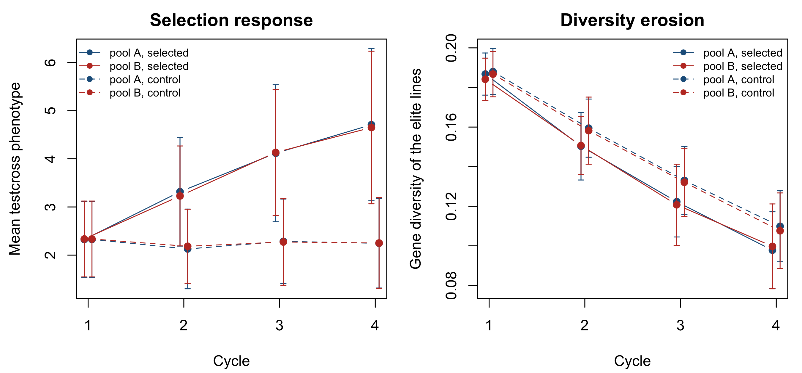

9Simulating a hybrid breeding programme: AlphaSimR from the ground up
Chapter 6 built the {X, f, hybrids, fL} contract with a deliberately fast simulator: Balding-Nichols allele frequencies, independent markers, no recombination, no dominance. That is enough to exercise the diversity and selection machinery, but it is not how a hybrid breeding programme is actually run, and it is not how anyone would build one from scratch.
This chapter builds one. The crop in mind is maize, the canonical allogamous hybrid crop: two heterotic pools, inbred lines (doubled haploids, DH) drawn from each, lines judged by their testcrosses onto the other pool rather than by themselves, pools improved by reciprocal recurrent selection (RRS) (Comstock et al. 1949), and a commercial product that is a single cross between one line from each pool. Steps 1 to 7 are a step-by-step construction with AlphaSimR (Gaynor et al. 2021), written out in the primitive calls – runMacs(), SimParam, addTraitAD(), makeCross(), hybridCross(), makeDH(), setPheno(), selectInd() – with a plant breeder’s reading of each argument and a measurement at each step. Step 8 assembles those primitives into RRS, replicates it against a paired no-selection control, and shows that the same stage-1 contract comes out the other end, so stage2_select() runs on it exactly as it does on the book’s own simulated data.
Why this machinery, and why it has no counterpart in a self-pollinated programme. In an autogamous (self-pollinated) crop – wheat, rice, soybean, common bean – recombination happens once, in the F1, and the programme then narrows a segregating population toward homozygosity by selfing or single-seed descent, selecting throughout on a line’s own (per se) phenotype, because a self-pollinated genotype breeds true and its own performance is what a farmer will grow: the released variety is very often the same homozygous line the breeder selected. Chapter 22, later in the Evidence and practice part, builds exactly that programme with the same AlphaSimR primitives – makeDH(), setPheno(), selectInd() – and can be read against this one, step by step. None of Steps 2, 4 and 6 below would have a job there: there is no dominance for per se selection to be blind to (an inbred line’s value is its additive merit alone – Step 3 makes this an identity, varD = 0 exactly on a homozygous panel), no tester to cross a candidate onto, no general or specific combining ability to estimate (Sprague and Tatum 1942), and no second, deliberately divergent population to keep apart, because there is only one gene pool, not two heterotic ones held apart on purpose. What follows instead is specific to an allogamous, hybrid-product crop: the inbred line is not the product, the F1 is (Step 5); a line’s breeding value depends on which pool it will be crossed to, not on itself alone (Step 6’s tester dependence); and the trait improvement a programme has made is realised only in a cross remade every season, never in either parental line by itself.
The pedagogical source is the AlphaSimR course of Gorjanc and colleagues (Gorjanc et al. 2022): its vignettes on simulating DNA, simulating traits, the DNA lottery, single- and multi-trait selection, and a plant breeding programme. The course has no hybrid programme of its own; the wheat programme it does build is the subject of Chapter 22. This chapter takes the course’s primitives and assembles them into the hybrid case.
The order matters. Everything in Step 8 is a wrapper in R/13_alphasimr_bridge.R – rrs_config, alphasimr_founder_pools(), alphasimr_rrs_cycle(), alphasimr_make_hybrids(), alphasimr_to_stage1(), alphasimr_pipeline() – and a wrapper is only readable once you know what it is wrapping. AlphaSimR is a Suggests dependency, guarded exactly like quadprog and highs elsewhere in the package; this chapter and Chapter 22 are the only ones that need it.
9.1 Step 1 – Founder genomes: what a founder is, and which engine to use
Every AlphaSimR simulation starts with founder haplotypes. Before choosing an engine, it is worth seeing what one produces, at a size small enough to read. inbred = TRUE makes every founder fully homozygous, which is what a panel of inbred lines is.
One row per haplotype, two per diploid individual (1_1 and 1_2 are the two chromosome copies of individual 1), one column per segregating site across both chromosomes (1_3 is chromosome 1, site 3). Alleles are coded 0 and 1 – ancestral and derived under a coalescent engine, arbitrary labels under quickHaplo(). Because the founders are inbred, the two rows of each individual are identical. pullSegSiteGeno() sums the two rows into an allele dosage in {0, 1, 2}:
The two assertions fix the coding for the rest of the book. AlphaSimR’s dosage is 0/1/2; the contract of Chapter 6 codes the same information as 0/0.5/1, the within-individual frequency of the reference allele (AlphaSimR’s derived allele plays that role), and every bridge function divides by two on the way across (stage1_build() also detects and rescales 0/1/2 on its own). On an inbred individual the molecular self-coancestry of Chapter 2 is exactly 1, which is the second assertion.
There are two engines, and the choice is not cosmetic. runMacs() runs a backward-in-time coalescent, the MaCS program (Chen et al. 2009), under a species-specific demography – species = "MAIZE", "WHEAT", "CATTLE" – so the founders carry a realistic allele-frequency spectrum and realistic linkage disequilibrium (LD). quickHaplo() samples 0s and 1s directly: instant, and with no history behind it. Table 9.1 compares the two.
Show code
tm <-function(expr) as.numeric(system.time(expr)["elapsed"])# reproducibility: two calls from the same seed, and R's own stream after eachset.seed(7); qa <-quickHaplo(nInd =20, nChr =10, segSites =50, inbred =TRUE)rs_qa <- .Random.seedset.seed(7); qb <-quickHaplo(nInd =20, nChr =10, segSites =50, inbred =TRUE)rs_qb <- .Random.seedset.seed(7); ma <-runMacs(nInd =20, nChr =10, segSites =50, inbred =TRUE,species ="MAIZE")rs_ma <- .Random.seedset.seed(7); mb <-runMacs(nInd =20, nChr =10, segSites =50, inbred =TRUE,species ="MAIZE")rs_mb <- .Random.seedstopifnot(identical(rs_qa, rs_qb), identical(rs_ma, rs_mb),identical(qa@geno, qb@geno), !identical(ma@geno, mb@geno))# timing: one runMacs() call; quickHaplo() over n_rep_q calls, because a# single call is below the clock's resolutionn_rep_q <-100t_m <-tm(runMacs(nInd =20, nChr =10, segSites =50, inbred =TRUE,species ="MAIZE"))t_q <-tm(for (k inseq_len(n_rep_q))quickHaplo(nInd =20, nChr =10, segSites =50, inbred =TRUE)) / n_rep_qfmt(data.frame(engine =c("quickHaplo", "runMacs"),seconds_per_call =c(t_q, t_m),same_twice =c(identical(qa@geno, qb@geno),identical(ma@geno, mb@geno)),R_stream_same_after =c(identical(rs_qa, rs_qb),identical(rs_ma, rs_mb))), 4)
Table 9.1: The two founder engines on one founder set of 20 inbred individuals, 10 chromosomes and 50 segregating sites per chromosome (species = "MAIZE" for runMacs()). seconds_per_call: wall-clock seconds per call, machine-dependent (quickHaplo() averaged over 100 calls); same_twice: identical haplotypes from two calls after the same set.seed(7); R_stream_same_after: identical .Random.seed after those two calls.
engine
seconds_per_call
same_twice
R_stream_same_after
quickHaplo
0.0003
TRUE
TRUE
runMacs
2.6200
FALSE
TRUE
Read the last two columns of Table 9.1 together. runMacs() is not reproducible from set.seed(), while R’s own random stream advances by the same amount on every call.runMacs() draws a seed for MaCS from R’s stream (one sample.int() per chromosome) and hands it to the binary. The fourth column, asserted in the chunk, says that after two calls from the same seed R’s .Random.seed is identical: the amount of R’s stream the call consumes is fixed, and every draw R makes afterwards is the same in both runs. Yet the third column says the haplotypes differ. What was measured, then, is that MaCS’s output is not a deterministic function of the seed it is handed. The only thing that moves between two runs is the founder haplotypes themselves – and everything computed from those founders. quickHaplo() is pure R sampling and is exactly reproducible.
(The seconds_per_call column is wall clock and will differ on your machine and between renders. runMacs() takes seconds; quickHaplo(), timed over 100 calls because one call is below the clock’s resolution, takes about 0.26 ms per call.)
WarningThe founders are not seeded, and everything downstream is
This is the single most expensive trap in AlphaSimR, because it fails silently: the code looks reproducible, runs without complaint, and returns different numbers. The non-reproducibility is documented in alphasimr_founder_pools()’s help page for runMacs2(); Table 9.1 shows it is not runMacs2-specific but true of MaCS generally.
Two consequences, both because the founders move and not because of anything R’s stream does:
Found once, then branch. Any experiment comparing two schemes must draw the founders a single time and start both arms from that one object. Draw them twice and the two arms start from different founders, and the comparison measures the founders as much as the schemes. Chapter 24’ linked arm is built this way, and so is Step 8’s paired control below.
Save what you cannot reseed.saveRDS(founderGenomes, ...) is the only way to get the same coalescent history back in a later session.
Everything after the founders – the crosses, the doubled haploids, the phenotyping error, the recombination – is controlled by set.seed(), given the founders. Reseeding downstream does not recover the founders and is not needed for anything else.
So what does quickHaplo() give up? Linkage disequilibrium among the founders. The honest way to measure that is against the sampling floor: with n individuals, two completely independent loci still show r^2 of about 1 / (n - 1) by chance alone. Table 9.2 sets each engine against that floor.
Show code
ldstat <-function(fg) { SPx <- SimParam$new(fg) g <-pullSegSiteGeno(newPop(fg, simParam = SPx), simParam = SPx) g <- g[, apply(g, 2, stats::sd) >0, drop =FALSE] chr <-sub("_.*$", "", colnames(g)) # "chr_site" column names r <- stats::cor(g) adj <-diag(r[-nrow(r), -1]) # consecutive columns ... adj <- adj[chr[-length(chr)] == chr[-1]] # ... on the same chromosomec(adjacent =mean(adj^2), # neighbouring sites, same chromosomeoverall =mean(r[upper.tri(r)]^2), # all pairs, mostly distantnoise =1/ (nrow(g) -1)) # what pure chance gives}set.seed(3); lq <-ldstat(quickHaplo(nInd =100, nChr =5, segSites =200,inbred =TRUE))set.seed(3); lm_ <-ldstat(runMacs(nInd =100, nChr =5, segSites =200,inbred =TRUE, species ="MAIZE"))fmt(rbind(quickHaplo = lq, runMacs = lm_))
Table 9.2: Mean linkage disequilibrium (\(r^2\) between allele dosages) among 100 inbred founders, 5 chromosomes and 200 segregating sites per chromosome, one draw per engine (seed 3). adjacent: neighbouring sites on the same chromosome; overall: all pairs of polymorphic sites; noise: \(1/(n - 1)\), the \(r^2\) expected between independent loci in a sample of \(n\) individuals. The runMacs row is not reproducible from the seed (MaCS founders).
adjacent
overall
noise
quickHaplo
0.0103
0.0101
0.0101
runMacs
0.1254
0.0118
0.0101
adjacent is the mean r^2 between neighbouring sites on the same chromosome (pairs that straddle a chromosome boundary are excluded); overall is over all pairs, most of them on different chromosomes. quickHaplo()’s adjacent-site r^2 sits on the noise floor: there is no founder LD at all, as designed. runMacs()’s is 12 times the floor in this render, and its overallr^2 is barely above it – so the LD it creates is local, decaying with map distance, which is what real LD does.
The runMacs row of Table 9.2 is itself not reproducible, for the reason Table 9.1 establishes; the quickHaplo row is, to the last digit.
What that does and does not imply for the rest of the chapter. MaCS’s non-determinism does not reach R’s stream, so any step that draws its own quickHaplo() founders from a fresh set.seed() is exactly reproducible, and so would be a step that did not reseed: the runMacs() calls above leave the stream exactly where a fixed number of sample.int() calls leaves it. What is not reproducible is anything computed from MaCS founders – the runMacs rows of Table 9.1 and Table 9.2, and all of Step 8. The chapter still calls set.seed() immediately before each step’s own founder draw rather than once at the top, so that each step’s founders do not depend on what earlier steps drew. The draws that follow a founder draw are not all reseeded: in Steps 3 and 4 the phenotyping, the three rounds of random mating and the crosses of the DNA lottery take R’s stream from Step 2’s set.seed() through chunk order, so they are reproducible as part of this chapter’s execution order, not on their own. With that in place, two independent executions agree on every number in Steps 1 to 7 except the wall-clock seconds and the runMacs rows.
That measurement decides the policy this chapter follows:
quickHaplo(inbred = TRUE) for Steps 2–7 and all of Chapter 22. They teach the arithmetic of dominance, heterosis and response, where founder LD is not the point, and in exchange every number printed is reproducible from a clean clone. AlphaSimR still applies a real genetic map and real meiosis to every descendant, so linkage and the Bulmer effect of Chapter 24 still operate – only the founders’ history is stylised.
runMacs2(split = ) in Step 8. There the divergence between two heterotic pools is the object of study, and no amount of speed compensates for not having it. Every Step 8 result is therefore replicated over founder draws.
Founder LD does matter where marker-QTL association is the mechanism, which is genomic prediction. Chapter 14 does not model it: its traits are built on the markers themselves, so every causal locus is genotyped, there is no marker-QTL gap for founder LD to bridge, and its accuracies are a best case in that respect.
9.2 Step 2 – SimParam, and defining a trait with dominance
SimParam holds everything global: the genetic map, which sites are quantitative trait loci (QTL), the trait effects, the error variances. It is an R6 object, so its methods are called with $, and a variable named SP is picked up automatically by every AlphaSimR function that needs it.
A hybrid programme exists because of dominance: without it a line’s cross performance is its own breeding value and there is nothing a testcross can see that the line per se could not (Chapter 5). So the trait defined here, and used through Step 6, carries a dominance term from the start. This is exactly the reason an autogamous programme has no equivalent of this step: there, dominance is invisible by construction (a released, self-pollinated variety is homozygous, so no heterozygote is ever evaluated or sold) and SP$addTraitA() – additive effects only – is the whole model, the case Chapter 22 runs throughout.
Show code
# Seeded here, not once at the top of the chapter: Step 1 draws from R's random# stream (each runMacs() call consumes a fixed amount of it), so everything# downstream would move with any edit of Step 1 unless the seed# is reset immediately before the draw that matters.set.seed(101)founders <-quickHaplo(nInd =60, nChr =10, segSites =100, inbred =TRUE)SP <- SimParam$new(founders)SP$addTraitAD(nQtlPerChr =100, mean =10, var =1,meanDD = rrs_cfg[["mean_dd"]], varDD = rrs_cfg[["var_dd"]])SP$setVarE(h2 =0.4)
AlphaSimR 2.1.0 has 8 trait constructors (addTraitA(), addTraitAD(), addTraitADE(), addTraitADEG(), addTraitADG(), addTraitAE(), addTraitAEG(), addTraitAG()): one per combination of additive effects with dominance (D), epistasis (E) and genotype-by-environment (G). Choosing between them is choosing a model of gene action; the four that bear on a plant programme are:
Method
Adds
When a plant programme needs it
SP$addTraitA()
additive only
line per se performance; the course’s teaching case (Gorjanc et al. 2022), and Step 7 here
SP$addTraitAD()
+ dominance
testcross and hybrid value. This is what Steps 2–6 and Step 8 use
SP$addTraitAG()
+ genotype-by-environment
multi-location yield trials, where the same genotype is scored in several places. Chapter 22 uses it
SP$addTraitADE()
+ epistasis
available; used nowhere in this book
9.2.1 The dominance model, as AlphaSimR writes it
For a diploid with QTL \(k = 1, \dots, m\), let \(x_{ik} \in \{0, 1, 2\}\) be the dosage of the derived allele of individual \(i\) at QTL \(k\) (the column of pullQtlGeno()). AlphaSimR’s TraitAD genetic value is
with \(G_i\) the genetic value of individual \(i\) (the \(G(\mathbf{x})\) of Appendix A, written here on the 0/1/2 dosage rather than on the 0/0.5/1 row; not the Caballero-Toro statistic \(G_i\) of Chapter 3), \(x_{ik}\) in this chapter always the 0/1/2 dosage (an entry of \(\mathbf{M}^H\), not of \(\mathbf{X}\)), \(\mu_0\) an intercept, \(a_k \in \mathbb{R}\) the additive effect (half the difference between the two homozygotes, on the classical scale of Falconer and Mackay (1996, ch. 7), which puts the origin at the midpoint of the two homozygotes and assigns them \(+a\) and \(-a\) and the heterozygote \(d\); no equation number is attributed here, the scale is stated in full) and \(d_k \in
\mathbb{R}\) the dominance deviation, the departure of the heterozygote from that midpoint. Equation 9.1 is the model of Chapter 5 with AlphaSimR’s coding, and the chunk checks it rather than trusts it:
meanDD and varDD parameterise the dominance degree\(\delta_k = d_k / |a_k|\): AlphaSimR draws \(\delta_k \sim N(\texttt{meanDD},
\texttt{varDD})\) and sets \(d_k = \delta_k\,|a_k|\), so \(\delta_k = 0\) is additivity, \(\delta_k = 1\) complete dominance, \(\delta_k > 1\) overdominance, and a positive mean is directional dominance: on average the heterozygote sits above the homozygote midpoint, whichever allele is favourable. Directional dominance is what makes heterosis positive and inbreeding depression a loss on the trait scale; the presence of inbreeding depression is itself the evidence for it (Mackay et al. 2021), and maize grain yield shows large inbreeding depression (Hallauer et al. 2010). Table 9.3 compares the requested and the realised dominance degrees.
Table 9.3: Dominance degree \(\delta_k = d_k / |a_k|\) of the trait of Step 2 over its 1000 QTL (seed 101): the meanDD and varDD passed to addTraitAD() (requested) against the mean and variance of \(\delta_k\) in the draw (realised).
statistic
requested
realised
mean
0.4
0.378
variance
0.1
0.104
nQtlPerChr sets how polygenic the trait is. Setting it equal to segSites makes every segregating site a QTL, which is what this chapter does throughout – convenient, because then the marker matrix and the causal loci are the same set and there is no marker-versus-QTL gap to reason about. Real programmes have that gap; Chapter 10 is where the book takes it seriously.
mean fixes the mean genetic value of the founders. var fixes their additive variance (useVarA = TRUE, the default), not their total genetic variance – with inbred founders the two coincide, for a reason Step 3 shows. corA (Step 7) sets the genetic correlation between traits.
The environmental variance has two routes, and plant breeders use the second:
SP$setVarE(h2 = 0.4) fixes an error variance once, from the founders’ genetic variance (here 1.5), and every later setPheno() reuses it.
setPheno(varE = , reps = ) sets it per call. reps is the plant idiom for locations: varE is the plot-level error, and a genotype scored in reps plots has its error variance divided by reps, so the phenotype is an entry mean. That is how a staged programme raises selection accuracy from one stage to the next without ever changing the trait’s heritability – the mechanism Chapter 22 is built on, and the one Step 6 uses for testers.
9.3 Step 3 – The base population, and where the variance components live
newPop() turns founder haplotypes into individuals and, because a trait is now defined, computes their genetic values immediately (Table 9.4).
Table 9.4: The 60 inbred founders of Step 2 as a population (newPop(), one setPheno() draw after setVarE(h2 = 0.4)). n: individuals; meanG: mean genetic value (trait units); varG, varP: genetic and phenotypic variance (squared trait units); h2_realised: varG/varP.
n
meanG
varG
varP
h2_realised
60
10
1
2.614
0.383
The realised heritability is near but not equal to the requested 0.4: setVarE() fixes a variance, and the ratio it produces in any finite sample is itself a random variable. This is a general and useful habit – check what the simulation realised, do not assume what you requested.
genParam() returns the full decomposition. Four of its fields are the ones a hybrid programme cares about, and they read differently on a panel of inbred lines and on a random-mating population made from them (Table 9.5):
Table 9.5: Genetic mean and variance components (genParam()) of the 60 inbred founders of Step 2 (quickHaplo(), seed 101; 10 chromosomes x 100 sites, every site a QTL; dominance degree drawn with meanDD = 0.4, varDD = 0.1) and of the population after three rounds of random mating (1000 crosses each). varA: realised additive variance; genicVarA: additive genic variance; ratio: varA/genicVarA; varD, genicVarD: realised and genic dominance variance. Means in trait units, variances in squared trait units.
population
meanG
varA
genicVarA
ratio
varD
genicVarD
founders (fully inbred)
10.0000
1.0000
0.4274
2.3397
0.0000
0.0496
after 3 random matings
14.3495
0.4503
0.4264
1.0560
0.0793
0.0494
Show code
# Among fully homozygous lines the locus value is a (x - 1), so at linkage# equilibrium varA = sum 4 p q a^2, while genicVarA = sum 2 p q alpha^2 with# alpha = a + d (q - p): under dominance the LE ratio is close to, not# exactly, 2. What varA carries above varA_LE is disequilibrium.p_f <-colMeans(x0) /2# founder allele frequenciesvarA_f <- vtab[["varA"]][1]genic_f <- vtab[["genicVarA"]][1]varA_LE <-sum(4* p_f * (1- p_f) * a^2)ratio_LE <- varA_LE / genic_fvarA_LD <- varA_f - varA_LEratio_LD <- varA_LD / genic_fstopifnot(isTRUE(all.equal(as.numeric(bv(pop, simParam = SP)[, 1]),as.numeric(sweep(x0, 2, 2* p_f) %*% a))))# Verification echo, not a table: every value is cited in the text below.c(varA = varA_f, varA_LE = varA_LE, ratio_LE = ratio_LE,varA_LD = varA_LD, ratio_LD = ratio_LD) |>fmt(4)#> varA varA_LE ratio_LE varA_LD ratio_LD #> 1.0000 0.8495 1.9875 0.1505 0.3522
varA is the realised additive variance; genicVarA is what it would be if the loci were independent and in Hardy-Weinberg proportions. Their ratio is the whole subject of Chapter 24, and the package’s genic_var() computes the same quantity from a marker matrix directly.
The founders’ ratio of 2.34 has two parts, and the chunk separates them. Among fully homozygous lines the value at QTL \(k\) is \(a_k (x_{ik} - 1)\) with \(x_{ik} \in \{0, 2\}\), and AlphaSimR’s bv() on these founders is exactly \(\sum_k a_k (x_{ik} - 2 p_k)\) (asserted in the chunk). At linkage equilibrium its variance is varA_LE\(= \sum_k 4 p_k q_k a_k^2 =\) 0.8495, against a genic value of 0.4274: a ratio of 1.99, exact given the effects and the frequencies. That part is inbreeding – a homozygous population has per-locus variance 4pq where a Hardy-Weinberg one has 2pq. It is close to 2 and not exactly 2 because genicVarA is written with the Hardy-Weinberg average effect \(\alpha_k = a_k + d_k (q_k - p_k)\) defined below, whereas the homozygous lines carry \(a_k\); twice the genic value equals varA_LE only where \(d_k (q_k - p_k) = 0\) at every locus. The remainder, varA_LD = varA - varA_LE\(=\) 0.1505, or 0.35 in ratio units, is sampling (gametic-phase) disequilibrium among only 60 founders’ worth of gametes. Three rounds of random mating restore Hardy-Weinberg and pull the ratio to 1.06; what remains is that same disequilibrium. A ratio away from 1 in an outbred population is the gametic-phase disequilibrium Chapter 4 defines and Chapter 24 measures; a ratio away from 1 in an inbred one is mostly the homozygosity.
The dominance columns carry the hybrid lesson. varD among the inbred founders is exactly zero (the assertion above): a homozygous line has no heterozygous locus, so its dominance contribution is zero whatever \(d\) is, and no amount of per se evaluation of inbred lines can see dominance. This single identity is the operational reason an autogamous programme stops at per se selection and never needs a testcross: its released lines are exactly this “founders” row, varD = 0 for the whole life of the programme, so a line’s genetic value equals its breeding value up to a constant common to all lines (the bv() assertion above: \(G_i - \sum_k a_k (x_{ik} - 2p_k) = \mu_0 +
\sum_k a_k (2p_k - 1)\)), and its per se phenotype is that value plus error. After random mating varD appears. Two identities make that quantitative. With \(p_k\) the founders’ frequency of the derived allele at QTL \(k\) and \(q_k = 1 - p_k\), the population mean under Hardy-Weinberg proportions is the single-locus mean of Falconer and Mackay (1996, ch. 7), summed over loci (no equation number is attributed)
while the inbred panel at the same frequencies has only the first term of Equation 9.2. The difference, \(2\sum_k d_k p_k q_k\), is the inbreeding depression of Chapter 5 at \(F = 1\), which the package computes as inbreeding_depression(p, d, F_coef = 1). And the genic additive variance is \(\sum_k 2 p_k q_k \alpha_k^2\) with \(\alpha_k = a_k + d_k\,(q_k - p_k)\) the average effect of a gene substitution. Falconer and Mackay (1996) define \(\alpha\) in Ch. 7 and the single-locus additive variance \(2pq\alpha^2\) in Ch. 8; the equation numbers are not attributed here, so both identities are stated in this chapter’s notation: \(\alpha_k = a_k + d_k\,(q_k - p_k)\) and, summed over independent loci, \(\sum_k 2 p_k q_k \alpha_k^2\), which is the genic variance. (\(\alpha_k\) is the average effect throughout this chapter, not the diversity-loss budget \(\alpha\) of the rest of the book.) The chunk asserts both identities; Table 9.6 gives the two means.
Show code
gp <-genParam(pop, simParam = SP)alpha_f <- a + d * (1-2* p_f)stopifnot(isTRUE(all.equal(as.numeric(gp[["mu_HW"]] - gp[["mu"]]),inbreeding_depression(p_f, d, F_coef =1))))stopifnot(isTRUE(all.equal(as.numeric(gp[["genicVarA"]]),sum(2* p_f * (1- p_f) * alpha_f^2))))fmt(data.frame(mean_inbred =as.numeric(gp[["mu"]]),mean_HW =as.numeric(gp[["mu_HW"]]),inbreeding_depression =inbreeding_depression(p_f, d, F_coef =1)), 3)
Table 9.6: Mean genetic value (trait units) of the 60 inbred founders of Step 2 (mean_inbred, genParam()$mu) and of a Hardy-Weinberg population at their allele frequencies (mean_HW, genParam()$mu_HW, Equation 9.2), and their difference, the inbreeding depression at \(F = 1\) (inbreeding_depression(p, d, F_coef = 1)).
mean_inbred
mean_HW
inbreeding_depression
10
14.355
4.355
Both hold to machine precision against AlphaSimR’s own genParam(). The gap between the two means is the amount a random-mating population built from these lines would sit above the lines themselves – and, read in the other direction, the amount an open-pollinated population loses on being driven to homozygosity. It is the same \(d\) that Step 4 turns into heterosis.
9.4 Step 4 – The DNA lottery, heterosis, and why an F1 is not a family
The course (Gorjanc et al. 2022) demonstrates Mendelian sampling by crossing outbred founders and showing that full sibs vary. With inbred parents the result is different (Table 9.7), and it is the fact hybrid breeding is organised around.
Show code
crosses <-list(c(1, 2), c(1, 3), c(2, 3))n_lot <-200# F1 plants and DH lines per crosslottery <-do.call(rbind, lapply(crosses, function(ij) { plan <-matrix(ij, ncol =2) f1 <-makeCross(pop, plan, nProgeny = n_lot, simParam = SP) dh <-makeDH(makeCross(pop, plan, nProgeny =1, simParam = SP),nDH = n_lot, simParam = SP) better <-max(gv(pop)[ij])data.frame(cross =paste(ij, collapse =" x "),parent_mean =mean(gv(pop)[ij]),better_parent = better,f1_mean =as.numeric(meanG(f1)),f1_sd =as.numeric(sqrt(varG(f1))),dh_sd =as.numeric(sqrt(varG(dh))),dh_best =max(gv(dh)),transgressive =mean(gv(dh) > better),# how far the better parent sits above the DH mean, in DH s.d.gap_in_dh_sd = (better -mean(gv(pop)[ij])) /as.numeric(sqrt(varG(dh))))}))fmt(lottery[, c("cross", "parent_mean", "better_parent", "f1_mean", "f1_sd")], 3)fmt(lottery[, c("cross", "dh_sd", "dh_best", "transgressive", "gap_in_dh_sd")], 3)stopifnot(all(lottery[["f1_sd"]] <1e-8))stopifnot(which.max(lottery[["transgressive"]]) ==which.min(lottery[["gap_in_dh_sd"]]))
Table 9.7: The DNA lottery for the three crosses among founders 1, 2 and 3 of Step 2: 200 F1 plants per cross and 200 DH lines from one F1 plant. Genetic values in trait units. (a) parent_mean, better_parent: mid-parent and better-parent value; f1_mean, f1_sd: mean and s.d. over the F1 plants. (b) dh_sd, dh_best: s.d. and maximum over the DH lines; transgressive: fraction of DH lines above the better parent; gap_in_dh_sd: better parent minus mid-parent, in DH s.d.
(a) Parents and F1
cross
parent_mean
better_parent
f1_mean
f1_sd
1 x 2
10.655
12.193
14.997
0
1 x 3
10.912
12.193
15.350
0
2 x 3
9.374
9.632
14.029
0
(b) DH lines
cross
dh_sd
dh_best
transgressive
gap_in_dh_sd
1 x 2
0.788
12.749
0.025
1.952
1 x 3
0.584
12.249
0.010
2.193
2 x 3
0.568
11.276
0.320
0.453
f1_sd is zero, asserted to machine precision. Two fully inbred parents are homozygous everywhere, so every gamete each one makes is identical, and every F1 is the same heterozygote. The 200 F1 plants from a cross of two inbred lines are 200 copies of one genotype. There is no lottery yet – and this uniformity is the first reason a single-cross hybrid is a saleable variety.
f1_mean sits well above better_parent. That is heterosis, and under the model of Equation 9.1 it has an exact value: for inbred parents \(i\) and \(j\) with allele indicators \(u_{ik}, u_{jk} \in \{0, 1\}\) (their dosage halved), the F1 is heterozygous exactly where they differ, so
with \(G_{ij}\) the genetic value of the F1 between \(i\) and \(j\) (Equation 9.1 applied to its dosages). The additive terms cancel from the mid-parent difference because an inbred parent’s additive contribution is exactly half the F1’s. heterosis_value(X, d) is this sum, with X the F1’s 0/0.5/1 genotype; the chunk asserts it against AlphaSimR’s genetic values and Table 9.8 lists it per cross:
Table 9.8: Mid-parent heterosis \(H_{ij}\) (Equation 9.3, trait units) of the three crosses of Table 9.7: heterosis_value() on one F1 plant per cross, asserted equal to the F1’s genetic value minus the mid-parent.
cross
heterosis
1 x 2
4.342
1 x 3
4.438
2 x 3
4.655
Over a set of crosses the same identity has a closed form in the allele frequencies. Take the 60 founders as two arbitrary halves, “pool A” (lines 1–30) and “pool B” (lines 31–60) – arbitrary because quickHaplo() gave them a common history and no divergence, which Step 8 will add – and cross every A line to every B line. hybridCross(crossPlan = "testcross") is the full factorial. With \(p_{Ak}\) and \(p_{Bk}\) the derived-allele frequencies of the two pools at QTL \(k\), the mean of \(H_{ij}\) over the factorial is heterosis_expected(pA, pB, d), the identity of Chapter 5:
\[\bar H \;=\; \sum_k d_k\,\big(p_{Ak} + p_{Bk} - 2\,p_{Ak}\,p_{Bk}\big) \tag{9.4}\]
with \(\bar H\) the mean mid-parent heterosis over the factorial (the \(\mu\) of Appendix A, renamed because \(\mu_0\) is the intercept here; Table 9.9).
Table 9.9: The full factorial between the two halves of the 60 founders of Step 2 (pool A: lines 1 to 30, pool B: lines 31 to 60). n_hybrids: number of A x B hybrids; mean_A, mean_B, mean_hybrids: mean genetic value of each pool and of the hybrids (trait units); heterosis_observed: hybrid mean minus mid-parent of the pool means; heterosis_expected: Equation 9.4; pct_of_midparent: observed heterosis as percent of the mid-parent.
statistic
value
n_hybrids
900.000
mean_A
10.216
mean_B
9.784
mean_hybrids
14.427
heterosis_observed
4.427
heterosis_expected
4.427
pct_of_midparent
44.275
Exact, on the full factorial, because every A x B pairing is present once. The size – 44.3 percent of the mid-parent – follows from meanDD and from quickHaplo()’s frequencies near one half, where \(p_A + p_B - 2 p_A p_B\) is near its maximum; it is not calibrated to a crop. Falconer and Mackay (1996, ch. 14) derive the heterosis of the F1 between two random-mating populations as \(H_{F1} = \sum_k d_k y_k^2\) with \(y_k = p_{Ak} - p_{Bk}\) (stated here in this chapter’s notation rather than by their equation number; it is twice the divergence term of heterosis_partition()). The two do not conflict; they use different mid-parents. Theirs carries each population’s own random-mating heterozygosity; an inbred line carries none, so the whole F1 heterozygosity is heterosis and Equation 9.4 keeps the shared term as well – Chapter 5 works the reconciliation through.
The lottery starts one meiosis later. dh_sd is the standard deviation among doubled haploids drawn from that F1, and it is substantial – this is the segregation that F2, DH and recombinant inbred line (RIL) populations exist to sample. It is also why Chapter 7 is a chapter: the number of DH lines you pull from a cross is the number of tickets you buy, and no downstream selection stage can recover a combination that was never sampled.
transgressive is the fraction of DH lines exceeding the better parent per se: 0.025, 0.01 and 0.32 for the three crosses. It depends strongly on the cross, and gap_in_dh_sd says why: the DH lines are centred on the mid-parent, so what matters is how far the better parent sits above it in units of the DH standard deviation – 1.95, 2.19 and 0.45. The cross with the smallest gap is the one with the most transgressive lines (asserted), about a third of them; the other two, whose better parent is two DH standard deviations above the mid-parent, give a few percent. Crossing two parents whose favourable alleles sit at different loci produces progeny beyond either of them – transgressive segregation, which Mackay et al. (2021) treat, with heterosis and inbreeding depression, as consequences of one mechanism: favourable alleles dispersed between the parents, plus directional dominance – and how often depends on the gap between the parents relative to the segregation variance, not on a constant.
9.5 Step 5 – Selfing, doubled haploids, and why hybrid seed is remade every year
A plant breeder has to get from a heterozygous F1 to a homozygous line. There are two routes, and AlphaSimR implements both. Following the same cross through selfing generations also answers a question every hybrid grower has asked: what happens if the F1 seed is saved and sown again.
This is the one step where the allogamous, hybrid case and the autogamous case use literally the same primitive – makeDH() is exactly what Chapter 22 calls to take its wheat F1s straight to a homozygous line, one generation instead of the six or seven selfing generations traced in Table 9.10 – and where they diverge again in what the resulting inbred line is for. In an autogamous programme that homozygous line is commonly the release: it breeds true, so what leaves the DH pipeline is what a farmer eventually grows. In this chapter’s programme the homozygous DH line is a parent, held inside a heterotic pool, testcrossed and recycled (Step 6, Step 8), and never sold on its own; the object a grower plants is the F1 these lines make together, which is the reason it cannot be saved.
Under selfing without selection, the fraction of the F1’s heterozygous loci still heterozygous in generation \(F_t\) is \((1/2)^{t-1}\) in expectation, so the expected mean of the selfed generation is
with \(H_{ij}\) the F1 heterosis of Equation 9.3. At \(t = 2\) this is the classical result that the F2 retains half the F1 heterosis, \(H_{F2} = \tfrac{1}{2} H_{F1}\), which Falconer and Mackay (1996) derive in Ch. 14 for the F2 of a cross between two populations (stated here in this chapter’s notation rather than by their equation number); Equation 9.5 extends it to later selfed generations by the same argument, since the expected heterozygosity at every locus is halved each generation. Table 9.10 follows one cross through seven generations.
Show code
homozygosity <-function(p)mean(pullSegSiteGeno(p, simParam = SP) %in%c(0, 2))# Seeded here so that the |z| < 4 check below does not inherit the RNG state# of Step 4: this z-statistic is not exactly Gaussian at this sample size, so# an unrelated upstream edit that reseeded Step 4 could otherwise flip the# check and break the render even though it passes for the seed used here.set.seed(55)n_f1 <-400# F1 plants, each the root of one selfing lineageij <-c(1, 2)midparent <-mean(gv(pop)[ij])f1 <-makeCross(pop, matrix(ij, ncol =2), nProgeny = n_f1, simParam = SP)gen <- f1traj <-data.frame(generation ="F1", homozygosity =homozygosity(f1),meanG =as.numeric(meanG(f1)), sdG =as.numeric(sqrt(varG(f1))),expected = midparent + H[["1 x 2"]])for (t in2:7) { gen <-self(gen, nProgeny =1, simParam = SP) traj <-rbind(traj, data.frame(generation =paste0("F", t),homozygosity =homozygosity(gen),meanG =as.numeric(meanG(gen)),sdG =as.numeric(sqrt(varG(gen))),expected = midparent + H[["1 x 2"]] * (1/2)^(t -1)))}dh1 <-makeDH(f1, nDH =1, simParam = SP)traj <-rbind(traj, data.frame(generation ="DH", homozygosity =homozygosity(dh1),meanG =as.numeric(meanG(dh1)),sdG =as.numeric(sqrt(varG(dh1))),expected = midparent))traj[["z"]] <- (traj[["meanG"]] - traj[["expected"]]) / (traj[["sdG"]] /sqrt(n_f1))traj[["z"]][1] <-0# F1: no variance, and the identity of Step 4 is exactfmt(traj, 3)stopifnot(all(abs(traj[["z"]]) <4), traj[traj[["generation"]] =="DH", "homozygosity"] ==1)
Table 9.10: Selfing trajectory of the cross 1 x 2 of Table 9.7 (seed 55): 400 F1 plants, each the root of one single-seed selfing lineage carried to F7, and one DH line per F1 plant. homozygosity: fraction of homozygous segregating sites; meanG, sdG: mean and s.d. of genetic value over the 400 plants, in trait units; expected: Equation 9.5; z: (meanG - expected) over sdG/\(\sqrt{400}\), set to 0 for the F1, which has no variance. Rows follow the same lineages and are not independent.
generation
homozygosity
meanG
sdG
expected
z
F1
0.501
14.997
0.000
14.997
0.000
F2
0.753
12.798
0.667
12.826
-0.818
F3
0.876
11.742
0.759
11.740
0.045
F4
0.938
11.206
0.792
11.197
0.226
F5
0.970
10.951
0.792
10.926
0.616
F6
0.985
10.823
0.797
10.790
0.825
F7
0.993
10.744
0.790
10.723
0.533
DH
1.000
10.604
0.809
10.655
-1.244
Three columns, three lessons.
homozygosity: self() halves the remaining heterozygosity every generation – the familiar 1 - (1/2)^(t-1) approach to fixation, which never quite arrives. makeDH() gets there in one step, at 1.0 exactly, by doubling a haploid gamete.
meanG against expected: the F2 mean falls by half the heterosis, the F3 by three quarters, and the DH lines land on the mid-parent. Each row is 400 plants, one per F1 plant: self(nProgeny = 1) carries 400 parallel, independent selfing lineages forward, so within a row the 400 values are independent and sdG / sqrt(n_f1) is the standard error of the row’s mean. The check is statistical: z is the observed minus expected mean in units of that standard error, and the chunk asserts every |z| < 4. Across rows the same 400 lineages are followed – each \(F_t\) plant is the selfed progeny of one \(F_{t-1}\) plant – so successive rows are correlated, and the table is 400 lineages checked at seven generations, not seven independent samples. Nothing about the parents changed; the loss is the heterozygosity being halved, times \(d\). This is why hybrid seed is remade from the two inbred parents every season and why a maize F2 crop yields visibly less than the F1 it was saved from.
sdG: the F1 has none and the F2 has plenty. The F2 is not a variety; it is a segregating population, and a uniform, high-yielding one cannot be recovered from it by anything but selection and re-fixation – which is the line development a breeding programme does, not something a grower can do.
The saving DH buys is seasons, and seasons are the currency of a breeding programme: six or seven selfing generations against one DH cycle. Step 8’s scheme uses makeDH() for precisely this reason, and the cost that never shows up in the simulation is that DH production is a laboratory operation with its own failure rate and its own genotype-dependent response.
The other operations a scheme needs are all one call each: randCross() for random mating within a pool, makeCross() for a specified crossing plan, hybridCross() for a full factorial or a testcross between two groups, and mergePops() or c() to combine populations.
9.6 Step 6 – Phenotyping and selection: per se, then on the testcross
Selection needs a criterion. setPheno() supplies the noisy one; selectInd() acts on it. This step does it twice: first on a line’s own phenotype, as the course does (Gorjanc et al. 2022), to check the breeder’s equation; then on the testcross, which is how a hybrid programme actually ranks lines.
9.6.1 Per se selection and the breeder’s equation
Table 9.11 checks the breeder’s equation on per se selection.
Show code
n_prog <-1000# progeny of the selected parents, per drawbe_draw <-function(q, r) {set.seed(500+ r) mx <-setPheno(mixed, simParam = SP) sel <-selectInd(mx, nInd =round(q * mx@nInd), use ="pheno", simParam = SP) prog <-randCross(sel, nCrosses = n_prog, simParam = SP) S <-as.numeric(meanP(sel) -meanP(mx)) vA <-as.numeric(varA(mx, simParam = SP)) i_emp <- S /sqrt(as.numeric(varP(mx))) r_emp <- stats::cor(bv(mx, simParam = SP)[, 1], pheno(mx)[, 1])c(i_empirical = i_emp,R_S_h2 = S * vA /as.numeric(varP(mx)),R_i_r_sdA = i_emp * r_emp *sqrt(vA),R_observed =as.numeric(meanG(prog) -meanG(mixed)))}n_be <-20sweep_q <-do.call(rbind, lapply(c(0.05, 0.10, 0.20), function(q) { draws <-t(sapply(seq_len(n_be), function(r) be_draw(q, r))) gap <- draws[, "R_observed"] - draws[, "R_S_h2"]data.frame(q = q, i_normal =sel_intensity(q),t(colMeans(draws)),R_observed_sd = stats::sd(draws[, "R_observed"]),gap_mean =mean(gap), gap_sd = stats::sd(gap))}))fmt(sweep_q[, c("q", "i_normal", "i_empirical", "R_S_h2", "R_i_r_sdA")], 3)fmt(sweep_q[, c("q", "R_observed", "R_observed_sd", "gap_mean", "gap_sd")], 3)
Table 9.11: The breeder’s equation under per se truncation selection of the random-mated population of Table 9.5, at three selected fractions q, each averaged over 20 independent draws of phenotypes, selection and 1000 progeny (seeds 501 to 520). Responses in trait units. (a) i_normal: normal-theory intensity; i_empirical: standardised selection differential; R_S_h2: \(S h^2\) with narrow-sense \(h^2\); R_i_r_sdA: \(i r \sigma_A\). (b) R_observed: realised change in genetic mean, R_observed_sd its s.d. over draws; gap_mean, gap_sd: mean and s.d. of R_observed - R_S_h2.
(a) Intensity and predicted response
q
i_normal
i_empirical
R_S_h2
R_i_r_sdA
0.05
2.063
2.068
0.657
0.653
0.10
1.755
1.755
0.558
0.554
0.20
1.400
1.399
0.445
0.442
(b) Observed response
q
R_observed
R_observed_sd
gap_mean
gap_sd
0.05
0.654
0.074
-0.003
0.081
0.10
0.563
0.048
0.006
0.048
0.20
0.456
0.045
0.011
0.045
Both forms of the breeder’s equation are here, each averaged over 20 independent draws of the phenotypes, the selection and the progeny (the population selected from is the same mixed every time, so varA is fixed and only S, the accuracy and the Mendelian sampling vary). R = S * h2 uses the selection differential directly, with h2 the narrow-sense heritability varA / varP of the population selected from; R = i * r * sigma_A decomposes it into intensity, accuracy and available variation – the form Chapter 4 builds the book’s objective side on. Because the trait has dominance, the accuracy r is the correlation of the phenotype with the breeding value (bv()), not with the total genetic value: only the additive part is transmitted. R_observed is the realised change in genetic mean between the selected parents’ random-mated progeny and the starting population, which is what the prediction is a prediction of.
gap_mean is the paired difference between the observed response and R_S_h2, with gap_sd its standard deviation over the draws. The mean gap is -0.5 percent of the prediction at q = 0.05 and 2.5 percent at q = 0.20; its standard error over the 20 draws is gap_sd / sqrt(20), and the largest gap in units of that standard error is 1.1. A single draw is another matter: R_observed_sd says that one realisation of the response scatters by around 11 percent of the prediction at q = 0.05, which is why the course’s one-off comparison (Gorjanc et al. 2022) “did not match perfectly” and why this one is replicated. The equation predicts the additive response to first order in the allele-frequency change; what it leaves out is second order in that change and the dominance contribution of the progeny’s departure from Hardy-Weinberg proportions, both small with 1000 progeny from 50 or more parents. The empirical intensity agrees with the normal-theory value to within 0.2 percent: with 1000 candidates and a criterion that is a sum over 1000 loci plus normal error, the two assumptions of sel_intensity() – an infinite population and a normal criterion – are nearly met.
The book exports its own selection intensity, and AlphaSimR exports one too. They are independent implementations of phi(z) / q:
selectInd() takes use = "pheno", "gv" or "ebv". Selecting on "gv" is selecting with perfect accuracy – impossible in a real programme, and the correct way to compute the ceiling a scheme is being measured against. use = "ebv" selects on whatever has been written into the population’s ebv slot, which is how genomic selection enters a simulation (Chapter 22). selectTop = FALSE selects downwards, for traits where less is better.
selectWithinFam() is the plant-specific one. A programme that truncates globally on a set of families concentrates its selections in the best crosses, by an amount that depends on the number and size of the families and on the heritability (none of which is measured here); capping the number retained per family holds the programme’s genetic base open at some cost in immediate gain. It is the same trade-off as the max_use parental cap of Chapter 16, applied one stage earlier.
9.6.2 Selection on the testcross: general combining ability
A maize breeder does not rank inbred lines on their own yield. A line is crossed to a tester from the opposite pool, the testcross hybrids are grown in yield trials, and the line is ranked on the mean of its testcrosses. This subsection is the one with no autogamous counterpart at all: a self-pollinated variety is judged, released and grown as itself, so selection there stops at the per se phenotype of Step 6’s first half. A hybrid parent is judged by a cross it will never be sold as, which is the entire reason general and specific combining ability exist as concepts. The quantity being estimated is the line’s general combining ability (GCA), the average performance of its crosses expressed as a deviation from the mean of all crosses (Sprague and Tatum 1942); what a particular cross does beyond the sum of its two parents’ GCAs is the specific combining ability (SCA). The reciprocal recurrent selection of Comstock et al. (1949) is built on using the opposite pool as the tester so that selection captures both.
On the full factorial of Step 4 the GCA of every A line against pool B can be computed exactly, and under the model of Step 2 it has a closed form. With \(u_{ik}\) the line’s allele indicator, \(\bar G\) the factorial mean and \(g^A_i\) the GCA of pool-A line \(i\) against pool B (the notation of Appendix A),
\(\alpha^{(B)}_k\) is the average effect of substituting the line’s allele into a pool-B background – the same \(\alpha = a + d(q - p)\) of Step 3, with the frequency of the tester pool, not the line’s own pool. That is the algebraic content of the sentence “combining ability is a property of a line against a tester”: change the tester pool and the weights change. Its dominance part, \(\sum_k d_k (1 - 2 p_{Bk})(u_{ik} - p_{Ak})\), is the gca_A of heterosis_gca_sca() (Section 5.10), and the interaction residual of the factorial is that function’s sca. The chunk asserts all three identities; Table 9.12 gives the two variances and the correlation between a line’s own genetic value and its GCA.
Table 9.12: GCA and SCA on the full factorial of Table 9.9. var_GCA_A: mean square of the exact GCA \(g^A_i\) of the 30 pool-A lines against pool B; var_SCA: mean square of the SCA \(s_{ij}\) over the 30 x 30 crosses, the \(\sigma^2_{SCA}\) of Equation 9.7 (both squared trait units); cor_perse_gv_vs_GCA: correlation over the pool-A lines of their own genetic value with \(g^A_i\).
var_GCA_A
var_SCA
cor_perse_gv_vs_GCA
0.2678
0.0486
0.9973
The correlation cor_perse_gv_vs_GCA of Table 9.12 is the one to hold on to. Under Equation 9.6, the part of \(g^A_i\) that the line’s own genetic value does not carry is the dominance part, weighted at QTL \(k\) by \(d_k (1 - 2 p_{Bk})\), so what sets its size is how far the tester pool’s frequencies sit from one half. quickHaplo() samples every allele at frequency one half (Step 4), and here the mean of \(|1 - 2 p_{Bk}|\) over the 1000 QTL is 0.144, against a maximum of 1: the dominance weights are small, the dominance contribution to GCA nearly vanishes, and a line’s own genetic value ranks it for combining ability almost perfectly. That is a property of the founder frequencies, not of the two halves being undifferentiated: pools with no divergence but an allele-frequency spectrum away from one half have weights away from zero as well. Anything that moves \(p_{Bk}\) away from one half – the founders’ frequency spectrum, drift in the tester pool after a split, selection – gives the testcross information the line per se does not carry. Step 8 separates the two routes: its split = 0 row has a coalescent frequency spectrum and no divergence, and the sweep measures what divergence adds to that.
9.6.3 How many testers, how many locations
A programme cannot cross every candidate to every line of the other pool. It uses \(t\) testers and \(r\) locations (\(t\) is the \(k\) of the mating-design notation of Appendix A, renamed because \(k\) indexes QTL here; it is not the selfing generation of Equation 9.5 nor a Student \(t\)), and the estimate of \(g^A_i\) is the mean phenotype of the line’s \(t\) testcrosses, each an entry mean over \(r\) plots. Writing the testcross phenotype as \(\bar G + g^A_i +
g^B_j + s_{ij} + e_{ij}\) with \(e_{ij}\) the entry-mean error of variance \(\sigma^2_e / r\), and averaging over the \(t\) testers (whose own GCAs are common to every candidate and drop out of the ranking), the estimate is \(\hat g^A_i = g^A_i + \bar s_i + \bar e_i\), with \(\bar s_i\) the mean of the line’s SCA with its \(t\) testers and \(\bar e_i\) the mean error. The statistic the chunk computes is a sample correlation between \(\hat g^A_i\) and \(g^A_i\) over the \(n_A =\) 30 fixed candidate lines, with the \(t\) testers drawn without replacement from the \(n_B =\) 30 lines of pool B. To first order its expectation is
where \(v_g\) is the sample variance (\(n_A - 1\) divisor) of the candidates’ true GCA, because the correlation is taken over exactly those \(n_A\) points; \(\sigma^2_{SCA} = \frac{1}{n_A n_B}\sum_{ij} s_{ij}^2\) is the SCA variance on the factorial (computed above), \((n_B - t)/(n_B - 1)\) is the finite-population correction for \(t\) testers drawn without replacement from \(n_B\), \(n_A/(n_A - 1)\) turns the mean of the per-candidate variances of \(\bar s_i\) into the expected sample variance, and \(\sigma^2_e\) is SP$varE, the plot error of Step 2. The textbook form of Equation 9.7 replaces \(v_g\) by the population variance of GCA and \(v_s\) by \(\sigma^2_{SCA}/t\): it assumes an infinite tester pool and population variances. It is kept in Table 9.13 as predicted_infinite, so the two can be compared. Neither corrects the second-order term of a sample correlation (the Jensen term); it is measured directly, not assumed away, in Table 9.14, and left uncorrected because it is small at this \(n_A\). The simulation measures the thing itself: repeated draws of the tester set and of the field error, at every combination.
Show code
grid <-expand.grid(testers =c(1, 2, 4, 8), reps =c(1, 4))n_acc <-20acc <-sapply(seq_len(n_acc), function(rep) {set.seed(300+ rep) testers <- B[sample(B@nInd, max(grid[["testers"]]))] tc <-hybridCross(A, testers, crossPlan ="testcross", simParam = SP)apply(grid, 1, function(g) { ph <-setPheno(tc, reps = g[["reps"]], simParam = SP)@pheno[, 1] use <- tc@father %in% testers@id[seq_len(g[["testers"]])] est <-tapply(ph[use], tc@mother[use], mean)[A@id] stats::cor(est, gca_true) })})# The prediction, for the statistic actually computed above: a sample# correlation over the n_A FIXED candidates, with t testers drawn WITHOUT# replacement from the n_B lines of pool B.# est_i = GCA_i + sbar_i + ebar_i# v_g : the candidates' sample variance of GCA (n_A - 1 divisor), because# the correlation is taken over exactly these n_A points;# v_s : sbar_i is the mean of t values from row i of sca, whose n_B entries# average zero, so Var(sbar_i) = (s2_i / t) (n_B - t) / (n_B - 1) with# s2_i = mean_j sca_ij^2; the column means of sca are zero too, so the# sample mean of sbar over candidates is exactly zero and the expected# sample variance is mean_i Var(sbar_i) n_A / (n_A - 1)# = var_sca n_A / (n_A - 1) (n_B - t) / (n_B - 1) / t;# v_e : varE / (t r), independent of everything else.# To first order E[cor] = sqrt(v_g / (v_g + v_s + v_e)). The second-order# (Jensen) term of the sample correlation is not corrected here; it is# measured by Gaussian Monte Carlo in the chunk below the accuracy grid and# reported there (`jensen_max`) rather than asserted in advance.# `predicted_infinite` is the textbook form -- population variances, infinite# tester pool -- kept so the two can be compared at this replication.n_A <- A@nInd; n_B <- B@nIndvar_gca_n1 <- stats::var(gca_true)fpc <- (n_B - grid[["testers"]]) / (n_B -1)v_s <- var_sca * (n_A / (n_A -1)) * fpc / grid[["testers"]]v_e <- SP$varE / (grid[["testers"]] * grid[["reps"]])grid[["predicted"]] <-sqrt(var_gca_n1 / (var_gca_n1 + v_s + v_e))grid[["predicted_infinite"]] <-sqrt(var_gca / (var_gca + var_sca / grid[["testers"]] + v_e))grid[["observed_mean"]] <-rowMeans(acc)grid[["observed_sd"]] <-apply(acc, 1, stats::sd)grid[["z"]] <- (grid[["observed_mean"]] - grid[["predicted"]]) / (grid[["observed_sd"]] /sqrt(n_acc))fmt(grid, 3)
Table 9.13: Accuracy of the testcross GCA estimate of the 30 pool-A lines of Step 4: correlation with their exact GCA against pool B (Equation 9.6), for testers testers drawn without replacement from the 30 pool-B lines and reps locations, over 20 draws of the tester set and of the field error per cell (seeds 301 to 320). predicted: Equation 9.7; predicted_infinite: the textbook form (population variances, infinite tester pool); observed_mean, observed_sd: mean and s.d. of the correlation over the draws; z: (observed_mean - predicted) over observed_sd/\(\sqrt{20}\).
testers
reps
predicted
predicted_infinite
observed_mean
observed_sd
z
1
1
0.389
0.384
0.371
0.132
-0.612
2
1
0.513
0.507
0.521
0.163
0.203
4
1
0.646
0.639
0.620
0.085
-1.388
8
1
0.768
0.762
0.752
0.044
-1.625
1
4
0.628
0.622
0.622
0.107
-0.258
2
4
0.753
0.747
0.733
0.084
-1.028
4
4
0.852
0.847
0.843
0.039
-0.922
8
4
0.918
0.914
0.922
0.019
0.905
Show code
# Verification echo, not a table: every value is cited in the text below.acc_max_z <-max(abs(grid[["z"]]))acc_max_z_infinite <-max(abs(grid[["observed_mean"]] - grid[["predicted_infinite"]]) / (grid[["observed_sd"]] /sqrt(n_acc)))acc_max_gap <-max(abs(grid[["predicted"]] - grid[["predicted_infinite"]]))c(max_abs_z = acc_max_z, max_abs_z_infinite = acc_max_z_infinite,max_gap_between_predictions = acc_max_gap) |>fmt(3)#> max_abs_z max_abs_z_infinite #> 1.625 1.913 #> max_gap_between_predictions #> 0.007
Show code
# The second-order term the first-order prediction leaves out: the bias of a# sample correlation over n_A points, by Gaussian Monte Carlo per cell,# y = x + N(0, v_s + v_e), E[cor(x, y)] minus the first-order value. In the# table above the candidates are the SAME 30 lines in every draw, so `jensen`# holds x fixed at gca_true and draws only the noise -- the design actually# measured. `jensen_random_x` redraws x ~ N(0, v_g) as well, the textbook# small-sample bias of a correlation between two random variables, which is# a different (larger) quantity and not the one the table is exposed to.set.seed(600)n_mc <-4000cor_cols <-function(x, y) { xc <-sweep(x, 2, colMeans(x)); yc <-sweep(y, 2, colMeans(y))colSums(xc * yc) /sqrt(colSums(xc^2) *colSums(yc^2))}jensen_mc <-function(x_of) vapply(seq_len(nrow(grid)), function(i) { x <-x_of() y <- x +matrix(stats::rnorm(n_A * n_mc, 0, sqrt(v_s[i] + v_e[i])), n_A)mean(cor_cols(x, y)) - grid[["predicted"]][i]}, numeric(1))jensen <-jensen_mc(function() matrix(gca_true, n_A, n_mc))jensen_random_x <-jensen_mc(function()matrix(stats::rnorm(n_A * n_mc, 0, sqrt(var_gca_n1)), n_A))names(jensen) <-names(jensen_random_x) <-paste0("t", grid[["testers"]], "_r", grid[["reps"]])jensen_max <-max(abs(jensen))# cells as rows: eight cells as columns would not fit the pagefmt(cbind(fixed_candidates =c(jensen, max_abs = jensen_max),random_x =c(jensen_random_x, max_abs =max(abs(jensen_random_x)))), 4)
Table 9.14: Second-order (Jensen) bias of the sample correlation in each cell of Table 9.13 (row t<testers>_r<reps>): mean simulated correlation minus the first-order value of Equation 9.7, by Gaussian Monte Carlo with 4000 replicates per cell (seed 600). fixed_candidates: true GCA held at the 30 candidates’ values, the design of Table 9.13; random_x: true GCA redrawn from \(N(0, v_g)\), the textbook small-sample bias. max_abs: largest absolute value in the column.
fixed_candidates
random_x
t1_r1
-0.0032
-0.0074
t2_r1
0.0013
-0.0049
t4_r1
-0.0013
-0.0075
t8_r1
0.0019
-0.0085
t1_r4
-0.0023
-0.0041
t2_r4
0.0024
-0.0054
t4_r4
0.0009
-0.0037
t8_r4
0.0023
-0.0033
max_abs
0.0032
0.0085
The Jensen term for the design actually run (fixed_candidates, gca_true held fixed at the 30 candidates) is at most 0.003 in absolute value across the eight cells, small next to the accuracies themselves (0.39 to 0.92), which is what “left uncorrected” means quantitatively; random_x is the larger, textbook small-sample bias of a correlation between two random variables, shown only for contrast and not the quantity this chapter’s statistic carries.
Accuracy rises with both, and the two arguments buy different things. More locations shrink only the error term; more testers shrink the error term and the SCA term, because a line’s specific interactions with its testers average out. Table 9.13 is 20 draws of the tester set and of the field error per cell; the corrected and the textbook predictions differ by at most 0.007 here. z is the observed mean minus the corrected prediction in units of the standard error of that mean over the 20 draws; the largest |z| over the eight cells is 1.63 (it would be 1.91 against the textbook form), so at this replication the observed accuracies agree with the prediction. Each observed_sd is across tester sets and error draws, on a fixed set of candidates: what a single testcross trial’s ranking is worth depends on which testers were drawn, not only on how many; with one tester at one location the spread across tester sets is 0.35 of the accuracy itself.
In the scheme of Step 8 the testers are 2 individuals of the opposite pool and the trials have one location, which puts it in the low-accuracy corner of Table 9.13. A real maize programme would use elite inbred testers and several locations; Hallauer et al. (2010) is the reference on the choice of tester.
9.7 Step 7 – Two traits, and what equal weighting assumes
corA makes the traits genetically correlated, which is where selection stops being one-dimensional. This step uses an additive trait pair on its own founder draw: index theory is written on breeding values, and the point being made does not need dominance. Table 9.15 gives what the draw realised.
Table 9.15: The two additive traits of Step 7 after three rounds of random mating of 80 inbred founders (seed 202; requested genetic correlation -0.4, additive variances 1 and 4, \(h^2\) = 0.6 and 0.1). cor_genetic, cor_pheno: realised genetic and phenotypic correlation; h2_trait1, h2_trait2: realised varG/varP per trait. G and P in the code are the genetic and phenotypic covariance matrices of the traits, the \(\boldsymbol\Sigma_G\), \(\boldsymbol\Sigma_P\) of Appendix A, not the relationship matrix \(\mathbf{G}\).
cor_genetic
cor_pheno
h2_trait1
h2_trait2
-0.416
-0.084
0.47
0.072
The genetic correlation lands near the requested -0.4; the phenotypic one is much weaker, because the environmental components were left uncorrelated (SP$setCorE() is where that would change). The two traits differ in variance and, sharply, in heritability – the ordinary situation.
The book’s pipeline defaults to weights = NULL, meaning equal weight on every trait. Step 7 is where that default gets examined, using the index functions Chapter 4 introduced (Table 9.16):
Show code
cor_with_H <-function(w)drop(crossprod(w, G %*% a2)) /sqrt(drop(crossprod(w, P %*% w)) *drop(crossprod(a2, G %*% a2)))Bw <-rbind(equal = a2,smith_hazel =index_smith_hazel(P, G, a2),restricted =index_restricted(P, G, a2, R =cbind(c(0, 1))))# expected response per unit selection intensity on the index I = b'x:# the vector of phenotypic differentials is S = i P b / sqrt(b'Pb), and the# multi-trait breeder's equation R = G P^-1 S gives R = i G b / sqrt(b'Pb)dG <-t(apply(Bw, 1, function(w) drop(G %*% w) /sqrt(drop(crossprod(w, P %*% w)))))colnames(dG) <-c("gain_trait1", "gain_trait2")idx_tab <-cbind(Bw, dG, aggregate =rowSums(dG),cor_with_H =apply(Bw, 1, cor_with_H))fmt(idx_tab)stopifnot(isTRUE(all.equal(idx_tab[, "aggregate"], idx_tab[, "cor_with_H"] *sqrt(drop(crossprod(a2, G %*% a2))),check.attributes =FALSE)),abs(idx_tab["restricted", "gain_trait2"]) <1e-10*max(abs(dG)))
Table 9.16: Three two-trait indices on the population of Step 7 (two additive traits, 80 inbred founders after three rounds of random mating, seed 202; requested genetic correlation -0.4, \(h^2\) = 0.6 and 0.1) with economic weights (1, 1). Trait1, Trait2: index weights; gain_trait1, gain_trait2: expected genetic change per unit selection intensity on the index, in trait units; aggregate: their sum; cor_with_H: correlation of the index with the aggregate genotype. restricted: the index holding trait 2 at zero expected gain.
Trait1
Trait2
gain_trait1
gain_trait2
aggregate
cor_with_H
equal
1.0000
1.0000
0.0108
0.3612
0.3720
0.2434
smith_hazel
0.0789
0.0589
0.0437
0.3289
0.3727
0.2438
restricted
0.1986
0.0386
0.3179
0.0000
0.3179
0.2080
gain_trait1 and gain_trait2 are the expected genetic change in each trait per unit of selection intensity on the index, G b / sqrt(b' P b), and aggregate is their a-weighted sum – which equals cor_with_H times the standard deviation of the aggregate genotype, asserted. Three readings, in the order they matter:
Equal weights are not the Smith-Hazel solution. Smith-Hazel puts 0.75 units of weight on trait 2 for every unit on trait 1, not 1.00. The index is b = P^-1 G a(Smith 1936; Hazel 1943) (\(\boldsymbol\Sigma_P^{-1}\boldsymbol\Sigma_G\mathbf{a}\) in the notation of Appendix A), with no further structure, and b is proportional to a if and only if a is an eigenvector of P^-1 G. A sufficient condition is G = c P – every trait with the same heritability c and the genetic correlations equal to the phenotypic ones – which says nothing about the traits being equally variable or uncorrelated: index_smith_hazel()’s help page gives a correlated-trait pair (G = I, P = [[2, 0.5], [0.5, 2]]) for which equal weights are exact. Here the heritabilities are 0.47 and 0.07 and the genetic and phenotypic correlations -0.42 and -0.08, so G is nowhere near a multiple of P, and Table 9.16 shows that (1, 1) is not an eigenvector of P^-1 G.
The cost on the objective is modest here; the composition of the gain is not. Equal weighting loses 0.2 percent of the attainable correlation with the aggregate genotype. But it moves trait 1 by 0.011 per unit intensity where Smith-Hazel moves it by 0.044, 4.1 times as much; both indices put most of the aggregate into trait 2, whose genetic variance is 4.6 times larger, and the weights decide how much trait 1 moves at all. An index that is nearly as good on the objective can still land the gain somewhere else.
The restricted index holds trait 2 at exactly zero, at a cost of 15 percent of the aggregate. That is the construction of Kempthorne and Nordskog (1959) and, as Chapter 4 argues, the classical ancestor of this book’s alpha constraint – restrict a direction rather than price it.
Smith-Hazel is defined as the weight vector maximising that correlation, so the claim is checkable against a numerical optimum rather than taken on faith:
Multi-trait genomic selection in wheat, balancing yield against protein content and quality, is the standing plant example (Michel et al. 2019). In the hybrid scheme below only trait 1 enters the ranking; the second trait rides along in the contract so that stage2_select() has an index to build.
9.8 Step 8 – The parts assembled: reciprocal recurrent selection
Everything above was one operation at a time. A breeding scheme is those operations in a loop, and the loop for two heterotic pools is reciprocal recurrent selection: each pool is improved using the other pool as tester. Doubled-haploid lines are drawn from pool A, testcrossed to pool B (and vice versa), the testcross hybrids are phenotyped, and the lines with the best mean testcross performance – the GCA estimate of Step 6 – are recombined to found the next cycle’s pool. Elite lines from both pools, at the end, are crossed directly to produce the commercial hybrids. It is exactly the asymmetry Chapter 23 argues for: selection happens on the hybrid, recycling happens within pool.
9.8.1 Founding two pools with a real coalescent history
This is the one place the chapter pays for runMacs2() rather than quickHaplo(). AlphaSimR::runMacs2(..., split = ) draws founder haplotypes from a population-split coalescent history: one ancestral population, then two demes of equal size that stopped exchanging migrants split generations ago, with the first half of the sampled individuals from one deme and the second half from the other. That is the realistic analogue of simulate_lines()’s Balding-Nichols draw in Chapter 6, and between-pool divergence is the entire subject of Chapter 3, so a stylised substitute would not do. Table 9.17 summarises one draw at the bridge’s default settings.
Show code
n_split_draws <-20# founder draws per split time, belown_dh_gca <-10# DH lines per founder for the GCA measurement, belowfp <-alphasimr_founder_pools(rrs_cfg)founder_geno <-pullSegSiteGeno(c(fp[["pop_A"]], fp[["pop_B"]]), simParam = fp[["SP"]])fmt(data.frame(pool_A = fp[["pop_A"]]@nInd, pool_B = fp[["pop_B"]]@nInd,markers =ncol(founder_geno),heterozygous_fraction =mean(founder_geno ==1),gd_A =alphasimr_gd(fp[["pop_A"]], fp[["SP"]]),gd_B =alphasimr_gd(fp[["pop_B"]], fp[["SP"]])), 3)
Table 9.17: One founder draw of alphasimr_founder_pools(rrs_cfg) (runMacs2() with a population split). pool_A, pool_B: founders per pool; markers: segregating sites pulled by pullSegSiteGeno(); heterozygous_fraction: fraction of heterozygous genotype calls over both pools; gd_A, gd_B: gene diversity (1 - mean molecular coancestry) of each pool. Not reproducible from the seed (MaCS founders, Step 1).
pool_A
pool_B
markers
heterozygous_fraction
gd_A
gd_B
12
12
750
0.218
0.209
0.223
Reading alphasimr_founder_pools() against Steps 1 and 2, it is runMacs2(nInd = , nChr = , segSites = , split = ) followed by SP$addTraitAD(nQtlPerChr = seg_sites, meanDD = 0.4, varDD = 0.1) – the same dominance model as Step 2 – and SP$setVarE(h2 = 0.4). Two things about it must be said before any number is read. The founders are outbred: runMacs2() is called without inbred = TRUE, so each pool is a sample of a random-mating population, heterozygous at the fraction of sites given in Table 9.17 (heterozygous_fraction), as an open-pollinated maize population would be; the inbred lines of the scheme are made from them by makeDH() inside each cycle. And there is no separate marker panel: every one of the 150 segregating sites per chromosome is a QTL, so the sites that carry the trait are the ones pullSegSiteGeno() reads for X, f and fL throughout. alphasimr_gd() is 1 - mean(f), the exact definition gene_diversity() uses, computed from that pull, so the two pools are already on the same scale as every diversity number in the rest of the book.
Because these founders come from MaCS, no number in the rest of this section is reproducible from its seed – see Step 1: the founders move between runs, and everything below is computed from them. The chapter’s response is to replicate every Step 8 measurement over independent founder draws and report the spread.
What split does. The bridge’s default is split_gen = 100. The sweep of Table 9.18 draws 20 independent founder sets at each of four split times and measures three things on each: the partition of Caballero and Toro (2002) (Chapter 3) over the two pools (ct_partition(), the general form of gd_partition(): their \(F\)-statistics and the partition \(GD_T = GD_{WI} + GD_{BI} + GD_{BS}\), from which \(F_{ST} = GD_{BS} / GD_T\) follows as an identity derived in Chapter 3), the share of expected heterosis that the divergence term carries (heterosis_partition(), Chapter 5), and – the Step 6 question with divergence – how much of a DH line’s exact GCA against the other pool’s DH lines its own genetic value can see. For that last one, 10 DH lines are drawn from every founder, the full factorial between the two DH sets is made, and the GCA of each pool-A line is split into its additive and dominance parts with heterosis_gca_sca(); the identity behind that split was asserted in Step 6. The chunk also records, per draw, an ascertainment bookkeeping that the reading of GD_T will need: the fraction of sites monomorphic within each pool, the fraction fixed for opposite alleles in the two pools, and the part of GD_T those sites carry. Table 9.19 then tests the two GCA statistics between the extreme split times.
Show code
split_draw <-function(split, seed) { cfg <- utils::modifyList(rrs_cfg, list(split_gen = split, seed = seed)) fp_s <-alphasimr_founder_pools(cfg) SP_s <- fp_s[["SP"]] pool <-rep(c("A", "B"), c(cfg[["n_pool_A"]], cfg[["n_pool_B"]])) geno <-pullSegSiteGeno(c(fp_s[["pop_A"]], fp_s[["pop_B"]]), simParam = SP_s) ct <-ct_partition(geno, pool) pA_s <-colMeans(geno[pool =="A", ]) /2 pB_s <-colMeans(geno[pool =="B", ]) /2 d_s <- SP_s$traits[[1]]@domEff a_s <- SP_s$traits[[1]]@addEff hp <-heterosis_partition(pA_s, pB_s, d_s)# Ascertainment: runMacs2() returns sites that segregate in the POOLED# sample, so a site fixed for different alleles in the two pools is kept# and, with equal pool sizes, sits at pooled frequency 1/2 -- the maximum# of 2 p q. GD_T = mean 2 pbar qbar exactly (census weights, equal sizes),# so it splits into the part those fixed differences carry and the rest. mono_A <- pA_s %in%c(0, 1) mono_B <- pB_s %in%c(0, 1) fixed <- mono_A & mono_B & (pA_s != pB_s) pbar_s <- (pA_s + pB_s) /2 h_s <-2* pbar_s * (1- pbar_s)stopifnot(isTRUE(all.equal(ct[["diversity"]][["GD_T"]], mean(h_s))),isTRUE(all.equal(ct[["global"]][["F_ST"]], ct[["diversity"]][["GD_BS"]] / ct[["diversity"]][["GD_T"]])))set.seed(seed) dh_A <-makeDH(fp_s[["pop_A"]], nDH = n_dh_gca, simParam = SP_s) dh_B <-makeDH(fp_s[["pop_B"]], nDH = n_dh_gca, simParam = SP_s) hyb <-hybridCross(dh_A, dh_B, crossPlan ="testcross", simParam = SP_s) gca <-tapply(gv(hyb)[, 1], hyb@mother, mean)[dh_A@id] -as.numeric(meanG(hyb))[1] U_s <-pullQtlGeno(dh_A, simParam = SP_s) /2 hg <-heterosis_gca_sca(U_s, pullQtlGeno(dh_B, simParam = SP_s) /2, d_s)# GCA = additive part + dominance part (the Step 6 identity), so its# variance is var(add) + var(dom) + 2 cov(add, dom): three terms, not two. gca_add <-as.numeric(sweep(U_s, 2, colMeans(U_s)) %*% a_s) gca_dom <-as.numeric(hg[["gca_A"]])stopifnot(isTRUE(all.equal(as.numeric(gca), gca_add + gca_dom)))data.frame(split = split, seed = seed,F_ST = ct[["global"]][["F_ST"]],GD_T = ct[["diversity"]][["GD_T"]],GD_BS = ct[["diversity"]][["GD_BS"]],mono_A =mean(mono_A), mono_B =mean(mono_B),fixed_diff =mean(fixed),GD_T_fixed =sum(h_s[fixed]) /length(h_s),GD_T_other =sum(h_s[!fixed]) /length(h_s),maf_pooled =mean(pmin(pbar_s, 1- pbar_s)),heterosis_divergence_share = hp[["divergence"]] / hp[["total"]],GCA_var = stats::var(gca),GCA_var_add = stats::var(gca_add),GCA_var_dom = stats::var(gca_dom),GCA_cov2 =2* stats::cov(gca_add, gca_dom),GCA_dominance_share = stats::var(gca_dom) / stats::var(gca),cor_perse_GCA = stats::cor(gv(dh_A)[, 1], gca))}splits <-c(0, 10, 100, 1000)sw <-do.call(rbind, lapply(splits, function(s)do.call(rbind, lapply(seq_len(n_split_draws), function(r)split_draw(s, seed =100* s + r)))))sw_mean <-aggregate(sw[, -(1:2)], by =list(split = sw[["split"]]), FUN = mean)sw_sd <-aggregate(sw[, -(1:2)], by =list(split = sw[["split"]]), FUN = stats::sd)rownames(sw_mean) <-rownames(sw_sd) <-paste0("split_", sw_mean[["split"]])# the split time is carried by the row namescols_div <-c("F_ST", "GD_T", "GD_BS", "heterosis_divergence_share")cols_asc <-c("mono_A", "mono_B", "fixed_diff", "GD_T_fixed","GD_T_other", "maf_pooled")cols_gca <-c("GCA_var", "GCA_var_add", "GCA_var_dom", "GCA_cov2","GCA_dominance_share", "cor_perse_GCA")fmt(sw_mean[, cols_div], 3)fmt(sw_sd[, cols_div], 3)fmt(sw_mean[, cols_asc], 3)fmt(sw_mean[, cols_gca], 3)fmt(sw_sd[, cols_gca], 3)
Table 9.18: Founder pools from runMacs2() at four split times (split, coalescent generations since the two demes stopped exchanging migrants), 20 independent founder draws per split time; 12 + 12 outbred founders, 5 chromosomes x 150 sites, every site a QTL; row split_<s> is split time s. Not reproducible from the seed (MaCS founders, Step 1). (a) F_ST, GD_T, GD_BS of the partition of Caballero and Toro (2002), and the divergence share of expected heterosis. (b) Between-draw s.d. of the columns of (a). (c) Fraction of sites monomorphic in pool A (mono_A) and pool B (mono_B) and fixed for opposite alleles (fixed_diff); the parts of GD_T (in (a)) carried by the fixed sites (GD_T_fixed) and by all others (GD_T_other); pooled minor-allele frequency (maf_pooled). (d) Variance of the exact GCA of 10 pool-A DH lines per founder against the pool-B DH lines, its additive part, its dominance part and twice their covariance (squared trait units); GCA_dominance_share: dominance part over total; cor_perse_GCA: correlation of a line’s own genetic value with its GCA. (e) Between-draw s.d. of the columns of (d).
(a) Divergence, mean over draws
F_ST
GD_T
GD_BS
heterosis_divergence_share
split_0
0.021
0.310
0.007
0.021
split_10
0.045
0.305
0.014
0.043
split_100
0.261
0.300
0.078
0.206
split_1000
0.564
0.330
0.186
0.363
(b) Divergence, between-draw s.d.
F_ST
GD_T
GD_BS
heterosis_divergence_share
split_0
0.003
0.008
0.001
0.003
split_10
0.004
0.004
0.001
0.005
split_100
0.013
0.006
0.004
0.011
split_1000
0.011
0.007
0.007
0.007
(c) Ascertainment, mean over draws
mono_A
mono_B
fixed_diff
GD_T_fixed
GD_T_other
maf_pooled
split_0
0.071
0.067
0.000
0.000
0.310
0.229
split_10
0.107
0.110
0.000
0.000
0.305
0.225
split_100
0.325
0.316
0.011
0.005
0.295
0.222
split_1000
0.561
0.557
0.180
0.090
0.240
0.264
(d) Combining ability, mean over draws
GCA_var
GCA_var_add
GCA_var_dom
GCA_cov2
GCA_dominance_share
cor_perse_GCA
split_0
0.536
0.503
0.050
-0.017
0.094
0.954
split_10
0.470
0.400
0.045
0.024
0.097
0.952
split_100
0.427
0.349
0.059
0.019
0.145
0.927
split_1000
0.384
0.300
0.074
0.010
0.204
0.894
(e) Combining ability, between-draw s.d.
GCA_var
GCA_var_add
GCA_var_dom
GCA_cov2
GCA_dominance_share
cor_perse_GCA
split_0
0.078
0.103
0.022
0.069
0.045
0.025
split_10
0.137
0.132
0.019
0.046
0.033
0.018
split_100
0.186
0.149
0.029
0.068
0.044
0.023
split_1000
0.252
0.210
0.044
0.058
0.050
0.028
Show code
# the contrast between the two extreme split times, for the two GCA columnscontrast <-function(m) { x <- sw[[m]][sw[["split"]] ==max(splits)] y <- sw[[m]][sw[["split"]] ==min(splits)] se <-sqrt(stats::var(x) /length(x) + stats::var(y) /length(y))c(at_split_max =mean(x), at_split_0 =mean(y), difference =mean(x) -mean(y),se = se, t = (mean(x) -mean(y)) / se)}ctr <-rbind(GCA_dominance_share =contrast("GCA_dominance_share"),cor_perse_GCA =contrast("cor_perse_GCA"))fmt(ctr, 3)
Table 9.19: Contrast of two statistics of Table 9.18 (d) between the largest (split = 1000) and the smallest (split = 0) split time: mean over the 20 draws at each, their difference, the unpaired standard error of the difference, and \(t\) = difference / s.e. (draws independent between split times).
at_split_max
at_split_0
difference
se
t
GCA_dominance_share
0.204
0.094
0.110
0.015
7.361
cor_perse_GCA
0.894
0.954
-0.059
0.008
-7.136
Read Table 9.18 (a) and Table 9.18 (b) together: the first is the mean over the 20 draws, the second their standard deviation. What was measured: F_ST rises from 0.021 at split = 0 to 0.564 at split = 1000, and GD_BS from 0.007 to 0.186, each step many standard deviations wide; the divergence share of expected heterosis rises from 0.021 to 0.363. GD_T does not stay flat: it is 0.31 at split = 0, 0.3 at split = 100 and 0.33 at split = 1000, and the rise from split = 100 to split = 1000, 0.03, is 14 standard errors at this replication. Table 9.18 (c) is the bookkeeping behind that rise. Across the same range the fraction of sites monomorphic within pool A goes from 0.071 to 0.561 (pool B: 0.067 to 0.557), the fraction of sites fixed for opposite alleles in the two pools from 0 to 0.18, the part of GD_T those sites carry (GD_T_fixed) from 0 to 0.09, and the part carried by every other site (GD_T_other) falls from 0.31 to 0.24.
What is inferred from Table 9.18 (a) to Table 9.18 (c): runMacs2() returns the sites that segregate in the pooled sample of the two demes, so a site fixed for opposite alleles in the two pools is kept and, with equal pool sizes, sits at pooled frequency one half – the maximum of \(2\bar p \bar q\), which is exactly what GD_T averages over sites (asserted in the chunk). The rise in GD_T therefore comes entirely from sites fixed for opposite alleles, an ascertainment effect of how the founder sites are sampled, while diversity at every other site falls with divergence. At those other sites the reading is the one Chapter 5 gives for expected heterosis: drift moves diversity from within pools to between them and does not create it. How much of GD_T a marker panel shows under divergence therefore depends on how its sites were ascertained, which is a property of the panel and not of the pools.
Table 9.18 (d) and Table 9.18 (e) are the combining-ability side, mean and standard deviation, and Table 9.19 is the contrast between the two extreme split times, unpaired because the draws are independent. GCA is the sum of its additive and dominance parts (asserted in the chunk), so its variance is \(\mathrm{var}(\mathrm{add}) + \mathrm{var}(\mathrm{dom}) + 2\,\mathrm{cov}(\mathrm{add}, \mathrm{dom})\), three terms. What was measured, from split = 0 to split = 1000: GCA_var goes from 0.536 to 0.384, GCA_var_add from 0.503 to 0.3, GCA_var_dom from 0.05 to 0.074, and GCA_cov2 (\(2\,\mathrm{cov}\)) from -0.017 to 0.01, the last with between-draw standard deviations of 0.069 and 0.058; its largest \(|\text{mean}|/\text{s.e.}\) across splits is 2.36, against the two-sided 5 % point \(t_{0.975,\,19} =\) 2.09. The ratio GCA_dominance_share\(= \mathrm{var}(\mathrm{dom}) / \mathrm{var}(\mathrm{GCA})\) rises from 0.094 to 0.204 (t = 7.4). Which part drives it: holding the dominance part at its split = 0 value and moving only the additive part to its split = 1000 value gives a ratio of 0.149; holding the additive part and moving only the dominance part gives 0.132. And the per se-versus-GCA correlation falls from 0.954 to 0.894 (t = -7.1). Both correlations are below the 0.997 of Step 6’s undifferentiated halves, but that comparison crosses a change of founders, trait draw and line number, so the within-sweep contrast is the one that isolates split. The split = 0 row is the frequency-spectrum route of Step 6 without divergence: its pooled minor-allele frequency is 0.229, so the mean of \(|1 - 2\bar p_k|\) over sites, which equals \(1 - 2\,\)maf_pooled exactly, is 0.542, against 0.098 for Step 6’s two halves.
What is inferred: in this render the fall of the additive part of the GCA variance accounts for more of the rise in the ratio than the growth of the dominance part; an additive part that falls with divergence does so because the sites that fix within a pool stop contributing to it (at linkage equilibrium its variance over DH lines is \(\sum_k a_k^2\, p_{Ak} q_{Ak}\)), so the ratio can rise without the dominance part growing at all. The ratio is a partition of \(\mathrm{var}(\mathrm{GCA})\) only insofar as the covariance term is negligible. In this render that term is beyond the two-sided 5 % point at split = 10; with 20 draws, a term within that point is not shown to differ from zero, which is not a bound on its size. In magnitude, at split = 0\(|2\,\mathrm{cov}|\) is 0.34 times GCA_var_dom, and dropping it changes the ratio of the split = 0 means from 0.093 to \(\mathrm{var}(\mathrm{dom}) / [\mathrm{var}(\mathrm{add}) + \mathrm{var}(\mathrm{dom})] =\) 0.09. “Share” is used only in that qualified sense, and each founder draw calls runMacs2(), whose coalescent set.seed() does not control, so that verdict is this render’s and may change with the next. Whether the dominance part itself grows with divergence is a separate question, and the algebra does not fix its sign: at linkage equilibrium its variance over DH lines is \(\sum_k d_k^2 (1 - 2 p_{Bk})^2\, p_{Ak} q_{Ak}\), and divergence pushes the weight \((1 - 2 p_{Bk})^2\) up at the same loci where it pushes \(p_{Ak} q_{Ak}\) down. Measured, GCA_var_dom changes by 0.025 from split = 0 to split = 1000 (t = 2.2, against the conservative point \(t_{0.975,\,19} =\) 2.09), so in this render that change is beyond that point; being computed from MaCS founders, it is this render’s verdict and not a property of the scheme. The ratio’s own contrast is beyond the same point in this render; where it is beyond it and positive, what it supports is that a larger share, in the qualified sense above, of \(\mathrm{var}(\mathrm{GCA})\) is invisible to a line’s own genetic value after the split, through whichever part the decomposition above identifies, and nothing here separates how much of the between-draw spread is the trait drawn with each founder set and how much is the DH sampling. The limit of the inference is the scale: 12 individuals per pool, 750 sites, 20 draws per split, and a split in coalescent generations that is not calibrated to any named heterotic-pool pair. No other scale was simulated, so whether any of these directions holds at another one is not claimed.
9.8.2 One cycle
Table 9.20 is one cycle run on the founder pools above.
Table 9.20: Summary of one reciprocal recurrent selection cycle (alphasimr_rrs_cycle(), seed 11) on the founder pools of Step 8 at book scale: 12 + 12 founders, 3 DH lines per founder, 2 testers, 6 elites kept per pool. mean_tc_A, mean_tc_B: mean testcross phenotype (trait 1, trait units) of all DH lines tested, pool-A lines on pool-B testers and the reverse; gd_A, gd_B: gene diversity (1 - mean molecular coancestry) of the elite lines kept. Not reproducible from the seed (MaCS founders).
mean_tc_A
mean_tc_B
gd_A
gd_B
0.9678
1.4638
0.1766
0.1886
alphasimr_rrs_cycle() runs the same six steps for each pool, symmetrically (pool A tested on B, pool B tested on A), and every one is a primitive from above:
Double haploids (Step 5). makeDH() draws 3 fully homozygous lines from each individual in the current pool – at book scale, 12 parents x 3 DH each = 36 DH lines per pool, per cycle. Because the pool is outbred, the DH lines from one parent differ from each other: this is the lottery of Step 4, drawn one generation earlier than in a line programme.
Pick reciprocal testers. The first 2 individuals of the current opposite pool are used as testers – an arbitrary slice by index, not a random or merit-based draw, outbred individuals rather than inbred lines, and a different set each cycle because step 6 recreates the pool. This is the RRS-defining move: a line’s value is judged by its cross onto the other heterotic pool, not by itself.
Testcross and phenotype (Step 6). hybridCross() forms the full factorial between every DH line and every tester – 36 DH x 2 testers = 72 testcross hybrids per pool – and setPheno() adds phenotyping error sized to the heritability set by SP$setVarE(h2 = ), at one location.
GCA estimate (Step 6). Testcross phenotypes are grouped by DH-line parent (tapply(pheno[, 1], mother, mean)) and averaged across the 2 testers each line was crossed to. Only trait 1 is used for this ranking even though this chapter’s config simulates 2 traits per line; the second trait rides along in X/hybrids but plays no role in selection here. Step 7 is what it would take to use both.
Keep the elites (Step 6). The 6 DH lines per pool with the highest mean testcross phenotype are kept as elite_A/elite_B.
Recombine (Step 5). randCross() random-mates the elites back up to 12 individuals, founding the next cycle’s pool A (symmetrically for B).
elite_A/elite_B are what step 6 mates – and, in the last cycle, what the final commercial cross uses instead of being recombined again. The cycle’s summary mixes two different populations on purpose: mean_tc_A/mean_tc_B average over all DH lines tested that cycle (the population’s testcross performance before selection), while gd_A/gd_B are gene diversity of only the 6 surviving elites (the population after selection). That asymmetry is exactly what Figure 9.1 plots – response measured pre-selection, diversity measured post-selection.
9.8.3 The trajectory across cycles, replicated, against a paired control
alphasimr_pipeline() runs alphasimr_rrs_cycle() in a loop for 4 cycles, carrying pop_A/pop_B forward from one cycle’s output to the next’s input. Only the last cycle’s elite_A/elite_B go on to found the commercial hybrid pool; every earlier cycle’s elites are spent entirely on randCross()ing the next cycle’s pool.
One run of that loop is an anecdote, and it would be an anecdote about one founder draw. The loop is written out here instead, so that three things can be added to it: a paired no-selection control (random_elite = TRUE, which draws the elites at random and leaves every other operation – the DH lines, the testcrosses, the recombination – the same operations, so the two arms differ by selection in expectation; because the random pick calls sample() and the selected pick does not, the arms’ random streams part at the cycle-1 elite pick, and from there on their Mendelian sampling and phenotyping errors are independent realisations, which the paired t below counts as noise), the between-pool partition of the recombined pools each cycle, and the genetic value of the actual product, the elite factorial.
48 founder draws; each drawn once and both arms branched off it, with the same seed set before each arm so that cycle 1’s DH lines and testcross phenotypes are identical between arms (asserted) and the two first diverge at the selection step. The first replicate’s selected arm, cycle by cycle (Table 9.21):
Table 9.21: The selected arm of the first of the 48 founder draws, cycle 0 (founders) to cycle 4. Not reproducible from the seed (MaCS founders). (a) mean_tc_A, mean_tc_B, gd_A, gd_B as in Table 9.20; hybrid_meanG: mean genetic value (trait 1, trait units) of the 6 x 6 elite factorial. (b) gd_pool_A, gd_pool_B: gene diversity of the recombined pools; GD_BS, F_ST: between-pool components of those pools.
(a) Response and elite lines
cycle
mean_tc_A
mean_tc_B
hybrid_meanG
gd_A
gd_B
0
NA
NA
NA
NA
NA
1
2.249
1.988
3.116
0.190
0.181
2
2.788
2.603
3.978
0.164
0.161
3
4.259
3.622
4.448
0.146
0.141
4
4.256
4.012
4.840
0.118
0.125
(b) Recombined pools
cycle
gd_pool_A
gd_pool_B
GD_BS
F_ST
0
0.219
0.231
0.071
0.240
1
0.190
0.180
0.098
0.346
2
0.164
0.161
0.109
0.402
3
0.147
0.142
0.115
0.443
4
0.115
0.121
0.128
0.520
gd_pool_A/gd_pool_B are the gene diversity of the recombined pools that enter the next cycle, on the same 1 - mean(f) scale as the elites’ gd_A/ gd_B; GD_BS and F_ST are the between-pool components of those two pools; hybrid_meanG is the mean genetic value of the 6 x 6 elite factorial, the product the cycle would sell. All of them, over all replicates, at the last cycle, selected minus control, are in Table 9.22; Table 9.23 gives each pool’s relative loss of gene diversity:
Show code
last <- rrs_cfg[["n_cycles"]] +1# The two pools are exchangeable by design, so their mean is a legitimate# pooled statistic; how much noise it removes is measured below (pool_tab).arms <-lapply(arms, function(a) lapply(a, function(x) { x[["gd_elite_mean"]] <- (x[["gd_A"]] + x[["gd_B"]]) /2 x[["gd_pool_mean"]] <- (x[["gd_pool_A"]] + x[["gd_pool_B"]]) /2 x}))metrics <-c("mean_tc_A", "mean_tc_B", "hybrid_meanG", "gd_A", "gd_B","gd_elite_mean", "gd_pool_A", "gd_pool_B", "gd_pool_mean","GD_BS", "F_ST")arm_last <-function(arm, m) vapply(arms, function(a) a[[arm]][[m]][last], numeric(1))diffs <-function(m) arm_last("sel", m) -arm_last("ctl", m) # one per founder drawpaired <-function(m) { dd <-diffs(m)c(selected =mean(arm_last("sel", m)), control =mean(arm_last("ctl", m)),diff_mean =mean(dd), diff_sd = stats::sd(dd),t =mean(dd) / (stats::sd(dd) /sqrt(length(dd))))}rep_tab <-t(sapply(metrics, paired))t_paired <- rep_tab[, "t"] # named: t_paired[["gd_elite_mean"]]t_crit <- stats::qt(0.975, df = n_rep -1)sig_paired <-abs(t_paired) > t_crit # named logical, same namesfmt(rep_tab, 3)# Pooling the two pools halves the variance only if their paired differences# are uncorrelated across founder draws: measured, not assumed.pool_pair <-function(mA, mB) { dA <-diffs(mA); dB <-diffs(mB)c(cor_AB = stats::cor(dA, dB), sd_A = stats::sd(dA), sd_B = stats::sd(dB),sd_pooled = stats::sd((dA + dB) /2),sd_if_independent =sqrt((stats::var(dA) + stats::var(dB)) /4))}pool_tab <-rbind(gd_elite =pool_pair("gd_A", "gd_B"),gd_pool =pool_pair("gd_pool_A", "gd_pool_B"),mean_tc =pool_pair("mean_tc_A", "mean_tc_B"))fmt(pool_tab, 3)stopifnot(isTRUE(all.equal(pool_tab["gd_elite", "sd_pooled"], rep_tab["gd_elite_mean", "diff_sd"])))
Table 9.22: Selected arm against the paired no-selection control at the last cycle (cycle 4), over 48 founder draws, each branched into both arms. Not reproducible from the seed (MaCS founders). (a) Per statistic (as in Table 9.21; gd_elite_mean, gd_pool_mean: mean of the pool-A and pool-B values): mean of each arm, mean and s.d. of the paired difference (selected minus control), and paired \(t\) on 47 d.f. (b) Correlation across draws of the pool-A and pool-B paired differences, their s.d., the s.d. of their mean (sd_pooled), and that s.d. if the two were independent.
(a) Paired contrast per statistic
selected
control
diff_mean
diff_sd
t
mean_tc_A
5.068
2.366
2.703
1.090
17.182
mean_tc_B
5.046
2.394
2.652
1.026
17.902
hybrid_meanG
5.606
2.313
3.293
1.163
19.609
gd_A
0.097
0.101
-0.004
0.027
-1.096
gd_B
0.098
0.110
-0.012
0.028
-3.021
gd_elite_mean
0.097
0.106
-0.008
0.020
-2.908
gd_pool_A
0.096
0.100
-0.004
0.027
-0.941
gd_pool_B
0.097
0.110
-0.013
0.028
-3.114
gd_pool_mean
0.097
0.105
-0.008
0.020
-2.846
GD_BS
0.146
0.135
0.012
0.011
7.326
F_ST
0.603
0.563
0.041
0.064
4.390
(b) What pooling the two pools buys
cor_AB
sd_A
sd_B
sd_pooled
sd_if_independent
gd_elite
0.026
0.027
0.028
0.020
0.020
gd_pool
0.027
0.027
0.028
0.020
0.020
mean_tc
0.854
1.090
1.026
1.019
0.748
Show code
loss <-function(arm, m) vapply(arms, function(a) (a[[arm]][[m]][1] - a[[arm]][[m]][last]) / a[[arm]][[m]][1], numeric(1))loss_tab <-rbind(`pool A, selected`=c(mean =mean(loss("sel", "gd_pool_A")), sd = stats::sd(loss("sel", "gd_pool_A"))),`pool A, control`=c(mean =mean(loss("ctl", "gd_pool_A")), sd = stats::sd(loss("ctl", "gd_pool_A"))),`pool B, selected`=c(mean =mean(loss("sel", "gd_pool_B")), sd = stats::sd(loss("sel", "gd_pool_B"))),`pool B, control`=c(mean =mean(loss("ctl", "gd_pool_B")), sd = stats::sd(loss("ctl", "gd_pool_B"))))fmt(loss_tab, 3)fig_cap <-paste0("Reciprocal recurrent selection over ", rrs_cfg[["n_cycles"]]," cycles at book scale, ", n_rep, " founder draws, selection (solid) against ","the paired no-selection control (dashed); points are means over draws and ","bars plus and minus one standard deviation across draws. Left: mean ","testcross phenotype (trait 1, trait units) of all DH lines ","tested that cycle, pool-A lines on pool-B testers ('A on B') and pool-B ","lines on pool-A testers ('B on A'); both estimate the A x B hybrid level, so the two curves ","are not separate per-pool responses. Right: gene diversity (1 - mean ","molecular coancestry) of the elite lines retained each cycle. Founders ","from runMacs2(), so the curves are not reproducible from the seed.")
Table 9.23: Relative loss of gene diversity of the recombined pools from cycle 0 to cycle 4, (cycle 0 - cycle 4) / cycle 0, mean and s.d. over the 48 founder draws, per pool and arm. Not reproducible from the seed (MaCS founders).
mean
sd
pool A, selected
0.565
0.104
pool A, control
0.547
0.083
pool B, selected
0.562
0.091
pool B, control
0.505
0.077

Figure 9.1: Reciprocal recurrent selection over 4 cycles at book scale, 48 founder draws, selection (solid) against the paired no-selection control (dashed); points are means over draws and bars plus and minus one standard deviation across draws. Left: mean testcross phenotype (trait 1, trait units) of all DH lines tested that cycle, pool-A lines on pool-B testers (‘A on B’) and pool-B lines on pool-A testers (‘B on A’); both estimate the A x B hybrid level, so the two curves are not separate per-pool responses. Right: gene diversity (1 - mean molecular coancestry) of the elite lines retained each cycle. Founders from runMacs2(), so the curves are not reproducible from the seed.
What was measured (Figure 9.1, Table 9.22 and Table 9.23): over 48 paired replicates, the selected arm’s mean testcross phenotype at cycle 4 differs from the control’s by +2.70 (mean_tc_A, pool-A lines on pool-B testers) and +2.65 (mean_tc_B, pool-B lines on pool-A testers) trait units, with paired standard deviations of 1.09 and 1.03; the elite factorial’s genetic value – the product – differs by +3.29 (t = 19.6). Gene diversity of the elite lines, averaged over the two pools, differs by -0.008 (paired s.d. 0.02, t = -2.9), and that of the recombined pools by -0.008 (t = -2.8). Between the pools, GD_BS differs by +0.012 (t = 7.3) and F_ST by +0.041 (t = 4.4). The two-sided 5 % point of t with 47 degrees of freedom is 2.01. Against it, in this render, the response – both testcross means and the product – is beyond it; the pooled elite-line gene-diversity difference is beyond it; the pooled recombined-pool difference is beyond it; the GD_BS difference is beyond it; the F_ST difference is beyond it.
Pooling the two pools’ differences is not free noise reduction, and Table 9.22 (b) (pool_tab) measures what it buys. Averaging halves the variance only if the two pools’ paired differences are independent across founder draws. For the elite-line gene diversity they are correlated at 0.03, and the pooled standard deviation, 0.02, is close to the 0.02 it would be if they were independent: pooling does what it should there. For the testcross mean they are correlated at 0.85, and the pooled standard deviation is 1.02 against 0.75 if independent: pooling does not reduce that noise. The construction of the two statistics accounts for the correlation without any appeal to the founder draw: mean_tc_A is the mean of pool-A lines on testers from the current pool B and mean_tc_B the mean of pool-B lines on testers from the current pool A, so both are estimates of the same A x B hybrid level, and progress in either pool raises both (better lines in one statistic, better testers in the other). How much of the correlation is that and how much is the founder draw is not separated here. The gd_A/gd_B and gd_pool_A/gd_pool_B rows are per pool and show the asymmetry between two exchangeable pools that any one set of 48 draws produces; the mean_tc_A/mean_tc_B rows are not per-pool responses, for the reason just given. Table 9.23 says how much of the pools’ loss is selection: the control loses gene diversity too – 6 elites recombined into 12 individuals is a bottleneck whether or not the elites were chosen – and the selected arm’s mean loss exceeds the control’s, with the pooled t just stated as the evidence.
What is inferred: with real meiosis and a dominance trait behind it, the A x B hybrid level responds to reciprocal recurrent selection – both testcross means and the elite factorial’s genetic value measure it – and at this replication that response is beyond t_crit. How much of it each pool contributes is not identified by these statistics: each testcross mean carries the progress of both pools, so a response in pool A alone would raise mean_tc_A and mean_tc_B together. Whether it spends within-pool diversity faster than the same bottleneck under drift alone is what the pooled gene-diversity t decides, and in this render it does for the elite lines and does for the recombined pools. Per founder draw, the ratio of the mean elite-line selection component to its paired standard deviation is 0.4, so a single draw does not settle its sign; the 48-draw t of -2.9 against t_crit = 2.01 is what decides it. Where the sign holds, the control isolates that component from the drift part, which is the distinction Chapter 23 draws with the package’s own faster simulator over a longer trajectory and a grid of selection intensities, and Chapter 22 draws a third time in an inbred-line programme. The between-pool rows: the GD_BS difference is beyond t_crit; where it is, and positive, RRS is moving the pools apart faster than drift does, which is what a scheme selecting on the cross is expected to do. F_ST\(= GD_{BS} / GD_T\) moves with its denominator as well, and GD_T of the recombined pools is not recorded in Table 9.22 (a), so GD_BS is the row read for divergence. What limits the inference is the scale – 12 founders per pool, 4 cycles, 2 testers at one location, 48 draws – and the fact that the founders come from MaCS, so both the numbers in this paragraph and any verdict that rests on a t near t_crit may differ between renders.
9.8.4 The final hybrid pool through stage2_select(), unchanged
alphasimr_pipeline() is the loop above without the instrumentation: founders, 4 cycles, then alphasimr_make_hybrids() testcrosses the final cycle’s elites directly against each other – a full factorial between the 6 pool-A elites and 6 pool-B elites, so 36 commercial hybrids – and phenotypes them the same way every testcross in this chapter was phenotyped. alphasimr_to_stage1() then does the bookkeeping that makes this look like any other stage-1 output: it remaps AlphaSimR’s internal line ids into the 1..n_A, n_A+1..n_A+n_B convention hybrids$line_A/line_B and fL use elsewhere in the book, and builds fL by stacking the elite lines from both pools’ genotypes into one matrix and computing a single joint coancestry matrix over all of them – not two separate per-pool matrices – which is what lets theta_pools() and the rest of the pipeline index into pool A and pool B lines with one consistent numbering. Table 9.24 shows both stages.
Show code
res <-alphasimr_pipeline(rrs_cfg)fmt(res[["cycles"]], 4)st1 <- res[["stage1"]]# the contract holds one row per elite A x B hybridstopifnot(nrow(st1[["X"]]) == rrs_cfg[["n_sel"]]^2)sel <-stage2_select(st1[["X"]], st1[["f"]], st1[["hybrids"]], n_sel =8, fL = st1[["fL"]],verbose =FALSE)fmt(sel[["metrics"]][, c("scenario", "alpha", "GD", "GD_BS", "F_ST", "index")], 4)
Table 9.24: alphasimr_pipeline(rrs_cfg) on one further founder draw, and stage2_select() on the stage-1 contract it returns. Not reproducible from the seed (MaCS founders). (a) Columns as in Table 9.20. (b) stage2_select() with n_sel = 8 of the 36 elite hybrids, one row per scenario: alpha, the diversity-loss budget; GD, GD_BS, F_ST of the selected set; index, the mean selection index of the selected set.
(a) Cycle trajectory, cycles 1 to 4
cycle
mean_tc_A
mean_tc_B
gd_A
gd_B
1
1.8913
2.1134
0.1908
0.1950
2
2.9944
3.1930
0.1443
0.1695
3
4.0470
4.1443
0.1061
0.1253
4
5.0833
4.8013
0.0936
0.0956
(b) Stage-2 selection on the elite hybrids
scenario
alpha
GD
GD_BS
F_ST
index
DE_alpha_0.00
-0.0090
0.2530
0.1672
0.6608
1.2255
DE_alpha_0.64
0.0008
0.2506
0.1709
0.6820
1.2525
DE_alpha_1.28
0.0080
0.2488
0.1738
0.6987
1.2641
DE_alpha_1.92
0.0080
0.2488
0.1738
0.6987
1.2641
DE_alpha_2.56
0.0256
0.2443
0.1792
0.7335
1.2905
ref_truncation
0.0256
0.2443
0.1792
0.7335
1.2905
ref_trunc_cap
0.0256
0.2443
0.1792
0.7335
1.2905
ref_max_div
-0.0405
0.2609
0.1561
0.5981
-0.2467
ref_random
0.0030
0.2500
0.1702
0.6806
-0.0769
This is one more founder draw, so its trajectory is one more replicate of Figure 9.1, not the same run. Depending on the draw, stage2_select() may warn that the attainable alpha ceiling is at or below zero: with 36 hybrids over 12 lines, truncation on the index can pick a set no less diverse than a random one of the same size, and then the constraint has nothing to restrict and every DE_alpha row coincides with ref_truncation. That is the same ceiling Chapter 16 computes on the book’s own data, where the pool is large enough for it to be positive. Nothing here is AlphaSimR-specific: stage2_select() never sees where X, f, hybrids and fL came from, only that they satisfy the contract stage 1 promises. GD_BS, the between-pool divergence that carries the heterosis signal (Chapter 12), is computed from fL exactly as it is everywhere else in the book.
9.9 Assumptions, and what this adds over Chapter 6
What is more realistic here. Actual recombination and linkage (a genetic map per chromosome, not independent markers), a trait with directional dominance so that testcross selection has something real to select on and heterosis and inbreeding depression have a value, outbred founder pools with a coalescent split behind them, and multi-generation recurrent selection with a paired control rather than one static pool.
What is declared, and where. Steps 2–6 use inbred founders from quickHaplo() with every site a QTL and dominance degrees drawn at meanDD = 0.4, varDD = 0.1; the “pools” of Steps 4 and 6 are two undifferentiated halves of one founder set. Step 7 uses a separate additive founder draw. Step 8 uses outbred founders from runMacs2(split = ), again with every site a QTL; its DH lines are fully inbred, its testers are outbred individuals, and every loss of diversity is measured against the same run’s founders (cycle 0) and against the paired no-selection control – not against a random-subset null of the same size, which is the reference Chapter 16’s alpha uses.
What is still simplified. Testers are the first 2 individuals of the current opposite pool, an arbitrary slice by index – not chosen at random or by merit, and not the elite inbred tester a real programme would use; because randCross() recreates each pool every cycle, the testers change from cycle to cycle, so successive cycles’ testcross means are not on a common tester and are comparable only through the pools’ genetic level; there is one phenotyping environment (setPheno()’s error variance, no genotype-by-environment term – Chapter 22 adds one); the population-split coalescent history is a stylised divergence process, not calibrated to a named heterotic-pool pair; doubled-haploid production is instantaneous, skipping the field seasons Step 5 counted; and selection acts on trait 1 only – the 2 traits this chapter’s config simulates are all carried through X/hybrids, but only the first ever enters the GCA ranking. The accuracy prediction of Step 6 is first order in the sample correlation – its finite-tester-pool and sample-variance corrections are applied, its second-order term is not – and the selfing trajectory of Step 5 follows 400 parallel lineages from one cross, checked at seven generations.
Scale. This chapter runs live at a book scale (12 + 12 founders, 750 markers, 4 cycles, 48 paired founder draws) – AlphaSimR is fast enough at this size that no caching is needed, unlike the marker-assisted backcrossing (MABC) scans in Chapter 8. Step 8’s numbers may change on re-execution and do change between sessions, because its founders come from MaCS (Step 1); a mean over draws moves by the order of its standard error (the between-draw standard deviation above over the square root of the number of draws), and so may a conclusion that rests on a t near t_crit, which is why the chapter writes each such inference conditionally on the render’s own t. A heavier, production-scale run is inst/scripts/run_alphasimr.R:
Rscript inst/scripts/run_alphasimr.R --test# smoke runRscript inst/scripts/run_alphasimr.R --out=DIR # full run
It runs alphasimr_pipeline() at a larger configuration, feeds the resulting hybrid pool through stage2_select(), and writes the cycle trajectory and selection metrics as CSVs.
9.10 Where this connects
Chapter 6 and Step 8 build the same three-object contract from two different generative models – the fast one and the realistic one – which is the point of drawing that seam where the book does: everything past it, build_ctx() through stage2_select(), cannot tell which one it is looking at. Chapter 5 is the algebra Steps 3, 4 and 6 verify against AlphaSimR: inbreeding depression against genParam(), expected heterosis against a full factorial, and the GCA/SCA decomposition against the exact combining abilities. Chapter 4 supplies the breeder’s equation Step 6 checks and the index theory Step 7 uses; Chapter 24 is where Step 3’s varA-against-genicVarA gap becomes the subject rather than a diagnostic. Chapter 3 supplies the partition Step 8 measures across split and across cycles. Chapter 23 runs the same diversity-erosion argument at a longer horizon with the package’s own faster simulator; this chapter is its cross-check against an engine with real meiosis behind it, and Chapter 24 uses this chapter’s linked arm for the same reason.
Chapter 22, in the Evidence and practice part, is the other half of the method: the same primitives assembled into an inbred-line programme with staged yield trials, where the question is not which hybrids to sell but how fast a variety pipeline can run and what it spends to run faster.
This closes the Simulation part. The Metrics and prediction part that follows turns from generating populations to measuring their diversity, starting with Chapter 10.
Reproduce this chapter
All the code of this chapter, in order and with the explanation kept as comments, is one script: 04c-alphasimr-pipeline.R. Download it, install hybdiv, and run it top to bottom in an empty directory; cached results are fetched on first use.
Caballero, A., and M. A. Toro. 2002. “Analysis of Genetic Diversity for the Management of Conserved Subdivided Populations.”Conservation Genetics 3 (3): 289–99. https://doi.org/10.1023/A:1019956205473.
Chen, Gary K., Paul Marjoram, and Jeffrey D. Wall. 2009. “Fast and Flexible Simulation of DNA Sequence Data.”Genome Research 19 (1): 136–42. https://doi.org/10.1101/gr.083634.108.
Comstock, R. E., H. F. Robinson, and P. H. Harvey. 1949. “A Breeding Procedure Designed to Make Maximum Use of Both General and Specific Combining Ability.”Agronomy Journal 41 (8): 360–67. https://doi.org/10.2134/agronj1949.00021962004100080006x.
Falconer, Douglas S., and Trudy F. C. Mackay. 1996. Introduction to Quantitative Genetics. 4th ed. Longman.
Gaynor, R. C., G. Gorjanc, and J. M. Hickey. 2021. “AlphaSimR: An R Package for Breeding Program Simulations.”G3: Genes, Genomes, Genetics 11 (2): jkaa017. https://doi.org/10.1093/g3journal/jkaa017.
Gorjanc, Gregor, Ivan Pocrnic, Jana Obšteter, Alireza Ehsani, Leticia A. de Castro Lara, and Nelson Lubanga. 2022. AlphaSimR Course Vignettes: Simulating DNA, Traits, Selection and Breeding Programmes.
Hallauer, Arnel R., Marcelo J. Carena, and J. B. Miranda Filho. 2010. Quantitative Genetics in Maize Breeding. 3rd ed. Vol. 6. Handbook of Plant Breeding. Springer. https://doi.org/10.1007/978-1-4419-0766-0.
Kempthorne, Oscar, and Arne W. Nordskog. 1959. “Restricted Selection Indices.”Biometrics 15 (1): 10–19. https://doi.org/10.2307/2527598.
Mackay, Ian J., James Cockram, Phil Howell, and Wayne Powell. 2021. “Understanding the Classics: The Unifying Concepts of Transgressive Segregation, Inbreeding Depression and Heterosis and Their Central Relevance for Crop Breeding.”Plant Biotechnology Journal 19 (1): 26–34. https://doi.org/10.1111/pbi.13481.
Michel, Sebastian, Franziska Löschenberger, Christian Ametz, Bernadette Pachler, Ellen Sparry, and Hermann Bürstmayr. 2019. “Combining Grain Yield, Protein Content and Protein Quality by Multi-Trait Genomic Selection in Bread Wheat.”Theoretical and Applied Genetics 132 (10): 2767–80. https://doi.org/10.1007/s00122-019-03386-1.
Sprague, G. F., and L. A. Tatum. 1942. “General Vs. Specific Combining Ability in Single Crosses of Corn.”Journal of the American Society of Agronomy 34 (10): 923–32. https://doi.org/10.2134/agronj1942.00021962003400100008x.